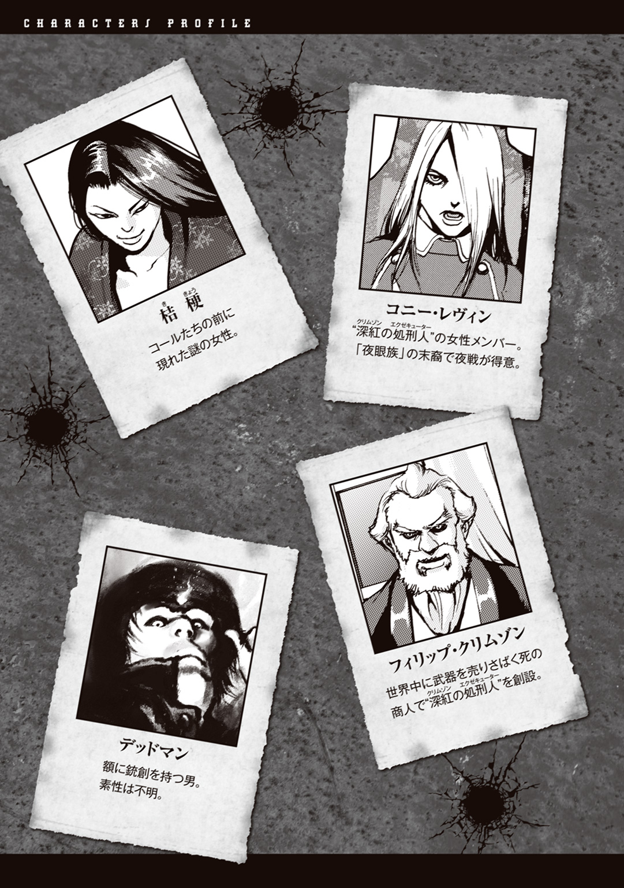

| PEACE MAKER ―BLACK WING― | |
| 皆川亮二 & 岡村直宏 | |
この本は縦書きでレイアウトされています。
また、ご覧になる機種により、表示の差が認められることがあります。
★この作品はフィクションです。実在の人物、団体、事件などにはいっさい関係ありません。

軍曹が意識を取り戻し目蓋を開くと、暗がりの中、石畳の上でひっくり返っている蛾の死骸が見えた。
どうやら自分の方は伏臥しているようだと軍曹は気付く。
左脚がやけに痛むので腿を触ってみると、掌には生温かいものがべったりと付いていた。酷い出血だった。
一体どうしてこうなったのか、まだぼんやりとした意識で記憶の糸を手繰り寄せようとした時、頭の先で銃声が聞こえた。
軍曹ははっとして首を上げる。
パン、という銃声とともに発射炎がぱっと瞬き、軍曹の視界を一瞬射た。
瞳に映じたのは街の大通りに横たわる夥しい数の同胞の屍――皆、額の小さな穴から血を流していた。
闇の中で軍曹は呆然とする。
俺は悪い夢でも見ているのか......。
と、次の瞬間、軍曹の目は銃口から火を噴いた回転式拳銃を捉えた。
銃把に黒い翼の浮彫――
軍曹の身体に衝撃が走った。
奴だッ！
その銃を操る者こそ、紛れもなくこの惨劇をもたらした男だった。
敵軍との交戦中、日が沈みかけた頃に突如敵兵として現れたその男によって、同胞の兵士たちが撃ち殺されていったのだ。
拳銃や小銃による応射も、縦横無尽に戦場を駆け回る男を止めることはできなかった。カノン砲に至っては、五十ヤード以上の距離から砲口に弾を撃ち込まれて爆炎を撒き散らしただけだった。
その爆風で自分の身体が人形のように吹き飛ばされて意識を失ったことを、軍曹は今はっきりと思い出した。
黒い翼の浮彫が発射炎に浮かび上がって見える度、男の周囲にいる仲間の兵士たちが倒れていく。戦闘はまだ継続している。
軍曹は傍に落ちているライフル銃を右手で引き寄せると、這うような姿勢で銃床を右肩に当て、男が見えたおよそ十五ヤード先の位置に照準を合わせた。
次に視界が開けた時が奴の最期......弾をブチ込む！
軍曹は闇の中で息を殺し、殺意を滾らせ引き金に指をかけて待った。
永遠にも感じる刹那の静寂。
ふと、軍曹は決闘に臨んでいるような心境になった。
早撃ち自慢の銃士による一対一の真剣勝負――決闘。これまで軍曹は三度経験があり、三度とも相手を葬っていた。
一度目は惚れた女を賭けて親友と殺り合った。
二度目は銀行強盗の取り分を巡って。仲間を撃ち殺して一人占めした。
三度目は、プライドを賭けて町の決闘チャンプに挑んだ。
そうだ、これは俺と奴との決闘だ！ 生きるか死ぬか、ただそれだけの、生命を賭けた決闘だ！ 俺は負けん、俺は勝つ！
その時、男の姿が発射炎に浮かび上がった。
くたばれえッ！
耳を劈く銃声が鳴り響く――
次の瞬間、軍曹の頭は背中の方にがくんと曲がり、額には穴が穿たれ血が噴き出していた。
軍曹が引き金を絞り切る前に、男の放った銃弾が額を撃ち抜いていたのだ。
その瞬間、軍曹が見たのはこちらに銃口を向けた男の姿――のはずだった。しかし、奇妙なことではあるが、軍曹には黒衣をまとった死神が見えていた。
髑髏の顔、その深い闇のような眼窩がこちらを睨んでいた。
そうか、俺は死神と決闘をしていたのか......相手が悪すぎる......
――――。
事切れた軍曹の頭は蛾の死骸を潰していた。
雲間から差した陽光が血臭と死臭の漂う街を照らし、青年はライフル銃を構えたまま伏臥している屍の前まで来て足を止めた。
端整な目鼻立ちにレンズの小さな長方形の眼鏡、毛先が跳ねた短い金髪、着衣は白いロングコートの戦闘服という長身の青年――ロマン・ビゼーは、親指と中指で眼鏡の縁に触ると周囲を見渡した。
街は廃墟と化していた。
石造りの建造物に穿たれた無数の弾痕が戦闘の激しさを物語っている。大通りを埋め尽くした兵士の屍は目につく範囲だけでも数百はくだらない。
この光景を作り出したのがまだ十七歳の若者というのだから驚きだった。
一通り様子を見終わると、ロマンはコートの裾を翻し、停めておいた黒塗りの社用車に戻って運転席に座った。
コール・エマーソン、会うのが楽しみだ。
そう思いながらエンジンキーを回してアクセルを踏み込み、廃墟の街を後にした。
１
蝙蝠の翼のような自在扉を押し開いて、ロマンは酒場に一歩踏み入った。
早速、酒とヤニの臭いが鼻を突く。出入口が申し訳程度に外の光を取り込んでいるだけの店内は薄暗く、奥へ行くほど影が濃い。天井の梁には巣を張っている毒々しい体色の蜘蛛が見える。
ロマンは親指と中指で眼鏡の縁を触ると、店の客に視線を走らせた。
煤けた木製のテーブル席に酔客の姿――惰眠を貪っている男、干し肉を咀嚼している男、何事か話している三人の男。
いずれも尋ね人ではなく、ロマンは小さく息を吐いて緊張を解いた。
ミシミシと音を立てる板張りの床を歩いてカウンター席に座り、ショットグラスを磨いている背中の丸いバーテンにサイダーを注文する。
酒を頼まないのは苦手だからである。アルコールが血に混ざり身体の中を巡ると、意識と身体が離れていく感じがする。自分自身の制御を失いそうで耐えられない。
以前、酒に酔った中年の男たちが若い女を襲おうとしている場に遭遇したことがある。その時つくづく思った、酒は人間を畜生にも変える危険なものなのだと。もちろん男たちにはもれなく弾丸を喰らわせてやった。
一目でぬるいと分かるサイダーのガラス瓶が目の前に置かれると、ロマンは一気に流し込んで胃に落とす。
と、聞くともなく聞いていた客の会話に馴染みの名を耳にした。
「間違いねえ、そいつは〝深紅の処刑人〟だ......！」「ああ、たった一人で一国の軍隊を壊滅させちまうなんて、そんなことができるのは深紅の処刑人しかいねえぜ」「まだこの近くにいるかもしれねえな......」
まさにその深紅の処刑人をロマンは捜していた。
三年もの間、各地の戦場を渡り歩いているその処刑人を連れ戻すよう総帥に命じられたのが一昨日のこと。昨夜の戦場からそう遠くへ行っていないだろうと目星を付けてこの街に来たのだが、まだ見つかっていなかった。
コール・エマーソン、どんな人物だろうか。
総帥から彼のことは粗方聞かされていた。使用する武器が〝ブラックウイング〟と聞いた時はさすがに驚かされた。
固定式弾倉の回転式拳銃、コルトＳＡＡ（シングル・アクション・アーミー）――通称、ピースメーカー。その銃把に黒い翼の浮彫が施されたオリジナルモデル、ブラックウイング。
どこか妖しげな彫刻を持つその銃は、かつて最強の銃士と謳われた深紅の処刑人ピース・エマーソンが愛用していたものだった。
聞けば、コールはピースの甥にあたり、少年時代ピースに育てられたのだという。
不思議な縁をロマンは感じた。ロマンにはピースとの浅からぬ因縁があった――
不意に、カウンター席の奥でとくとくと酒を注ぐ音が聞こえた。
そちらに目を凝らすと、男が一人いることが分かった。奥は暗がりになっているため今まで気付かなかった。
男は、酔った様子もなく、ボトルから注いだバーボンウイスキーをストレートで淡々と飲んでいる。
肩まで伸びた黒髪、鍛えられた無駄のない体軀に黒の戦闘服、そして、ホルスターから覗く黒い翼の浮彫――
間違いない、この男がコール・エマーソンだ。
腰に提げたブラックウイングが、男がコール・エマーソンであることを確信させ、同時にロマンを昔日の記憶に誘い、感傷的な気分にさせた。
「俺の銃に興味があるのか？」
突然声をかけられ、はっとして視線を上げる。声の主は両肘をカウンターに乗せてグラスのウイスキーを眺めている。
ロマンは一息ついて平静を取り戻すと、席を立って奥へ進み、コールの横に立った。
「自分はロマン・ビゼー。コール・エマーソン、あなたと同じ深紅の処刑人です」
こちらに顔を向けたコールと目が合い、剣吞な光を宿した瞳に一瞬気圧された。自分より三歳年若いこの男が、自分より遥かに多くの生命を奪っている、そう直感する。
「用件は何だ？」
コールはまたグラスに視線を戻して言った。
「総帥から伝言を預かってきました。申し上げます。
『直ちにエンペラーガーデンに戻れ。新たな命令を授ける』――以上です。
帰りの足はこちらで用意しました」
「そうか。よし、勘定を済ませる」
そう言ってカウンターに乗せたのは金ではなく、ガンベルトから外したホルスターとブラックウイングだった。
どういうことかと疑問に思って目を細めると、それに気付いたのか、コールは平然とした口調で告げた。
「金が鐚一ない。銃を酒代にする」
一瞬、ロマンは絶句した。
「冗談を......。あなたのことは総帥から伺っております。その銃は......ブラックウイングはあなたの叔父、ピース・エマーソンの魂とも言える大切なもの。それを易々と売れるわけがない」
「........................」
しばしの沈黙が流れ、コールが口を開く。
「そうだったな。うっかり、大切な銃を手放すところだった。危ない危ない」
コールは真顔でそう言うと、ブラックウイングをホルスターに収めて腰に戻した。
本気で売るつもりだったのか、と思ってすぐに、まさか、と否定した。冗談のはずだ、俺の反応を試したのだ、そう信じたい。
ロマンは懐から札束を摑み出してカウンターに置く。
「金欠ということでしたら、ここは自分に奢らせて下さい」
有り金の全てである札束を眺めると、コールは再びこちらに顔を向けた。
「ロマンとか言ったな。お前のおかげで助かった、礼を言うぜ」
「いえ、コール、礼など必要ありません。自分はあなたのパートナーなのですから」
「パートナー？」
「ええ、今回の仕事は二人一組の編成――自分はあなたに同行し、サポートするよう命じられています」
「オジキがそんなことを......」
コールは顎に手を当てて黙考を始めた。
俺と組むことに問題でもあるのだろうか？
佇んだまま返事を待っていると、不意にコールがこちらを向き、思いも寄らぬ一言を発した。
「お前、俺を殴れ」
「は？」
唐突に無茶な要求をされてロマンは戸惑う。
しかも『殴れ』とは、一体どういうことか。なぜ殴る必要があるのか？
「どうした、殴らないのか？ それじゃあパートナーにはできないぜ」
「殴れば、パートナーとして認めるということですか？」
「ああ、そうだ。俺を殴ることがパートナーにする条件だ。さあ、早く殴れ。俺の気が変わらないうちにな」
どうやら儀式のようなものらしい、これが彼の流儀なのだろう、そう思ってロマンは無理矢理自分を納得させた。
「分かりました。そういうことなら仕方ありません」
ロマンは右の拳を固める。コールは身構えるでもなく、まるで興味がないようにウイスキーに口をつけている。
「では、失礼します」
「加減するなよ」
「......それでは、遠慮なく」
ロマンは固めた右拳を更にぐっと握り込んだ。
コールの頰を見据え、シッと短く息を吐いてジャブを打つと、バシンと店内に打撃音が響きコールの顔がくるっとあちらを向いた。
これから生死を共にする相手を殴るというのは気分のいいものじゃない。
「これで問題ありませんね。自分はあなたのパートナーだ」
コールは口の端から流れた血をさっと手の甲で拭う。
「いいパンチだ......」
そう呟いたのが聞こえるやいなや、突然コールの腰からブラックウイングが消え、次の瞬間には鋭い眼光とともにその銃口がロマンの鼻先に向けられていた。
なにッ！
驚愕した刹那、目の前で銃声が轟く。
だが、反射的に身体は飛び退いていた。
ブーツの底が床に擦過痕を残して止まった時、パラパラと、弾丸が破壊した天井の一部から木屑が落ちる音をロマンは聞いた。
殺す気だ！ この男は本気で俺を殺すつもりでいる！ 初めからパートナーにする気などなかったのだ。
身を守るためやむなく腰のホルスターに右手を伸ばし、愛銃のコルトＳＡＡ・ブラックウイング・オマージュカラー（自称シャドウ）をドロウ、撃鉄を起こして構える。
しかし。
見据えた相手はトリガーガードに右手の人差し指を入れたまま銃をくるくると回転させると、流れるような動きでホルスターにすぽっと収めた。
ガンスピンというテクニックだ。
「いいぜ、認めるよ。お前は俺のパートナーだ」
ロマンは言葉を失い、立ち尽くした。
たった今殺そうとしておきながらパートナーにするとはどういうことか。それとも今の銃撃は俺の力を計るためだったとでもいうのか、避けられなければ死んでいたというのに......。この男は一体何を考えているんだ？
コールはウイスキーを呷って席を立ち、事の成り行きを怯えながら見ていたバーテンにくだんの札束を放り投げる。バーテンは慌てて抱きかかえた。
「迷惑をかけて悪かった。釣りはいい、女にでも使ってくれ」
酔客の視線を集めながらコールはこちらに歩を進めると、すれ違いざま、パンパンと軽く肩を二度叩いて通り過ぎていった。
まあまあと気をなだめたつもりだろうか？
ロマンは銃を収め、自在扉へ向かう彼の背中を追って歩き出す。
何を考えているか分からない、俺の最も苦手なタイプ――それがコール・エマーソンという人物に対する率直な感想だった。
パートナーとしてうまくやっていけるのか、ロマンは先行きに不安を感じていた。酒飲みというのも気にかかる。
とにかく、この男には注意しよう。
コールの後について自在扉を抜けて外に出ると、陽射しが驚くほど眩しかった。
２
一日半かけて街道を辿りエンペラーガーデンの市街に入ると、窓から心地よい海風が吹き込んできた。ハンドルを握りながらロマンは潮の匂いを鼻腔に吸い込んだ。
目抜き通りに並ぶオフィスは夕刻の茜色に染まっている。
バックミラーに目をやると、後部座席で熟睡しているコールの姿が見える。先の戦闘での疲労を回復させているのだろう、酒場を出て車のシートにもたれてからずっと冬眠したように眠り続けている。
寝顔は世間一般の十七歳となんら変わらず、人殺しを生業としていることが噓のように思えた。
市街に入ってまもなく、エンペラーガーデンで最も高くそびえるドーム屋根の建物をロマンは見上げた。
世界最大の武器商――クリムゾンカンパニーの社屋に帰還したのである。
屋内駐車場に車を停めると、社の者に出迎えられ、エレベーターに運ばれて最上階にある総帥の間に辿り着いた。
入室したロマンは扉を背に一揖する。
「ただいま戻りました」
「ご苦労」
執務机の奥でこちらに背を向けた豪奢な椅子にもたれ、クリムゾンカンパニー総帥――フィリップ・クリムゾンが格子窓の外に広がる夕暮れの街を一望しながら答えた。
この主君ほど圧倒的な威厳と権力者の風格を備えた人物をロマンは未だ知らなかった。口の周りに顎、もみあげと、たっぷりと蓄えられた白髭が恐ろしいほど似合っている。
腰を上げてゆっくりと振り向いたフィリップがロマンの横にいるコールを睥睨すると、その視線をコールは泰然と受け止めた。
二人に如何なる過去があったのか、ロマンはほとんど何も知らないと言っていい。ただ、フィリップが自らブラックウイングの継承者にコールを選んだのだから、やはり何か深い繫がりがあるのだろうと、漠然と思ってはいた。
直立不動で二人を見ていると、フィリップが皺の刻まれた顔を綻ばせた。
「見違えたな」
「だろ？ 自分でもイイ男になったと思ってる」
「フフフ......この三年間、お前がどれほど多くの殺意を喰らってきたか、その銃とともに業をまとった姿を見れば分かるぞ」
「オジキには感謝している、俺が望んだ戦場を用意してくれたんだからな。己を鍛え上げるのにあれほど最高の場所はない。敵に情を抱けば命を落とす......俺は慈悲の心を捨て、ひたすら殺すことだけを考えた。おかげでそこそこ強くなれたと思う。これからもよろしく頼むぜ」
「いいだろう、戦場なら好きなだけ与えよう。だが、その前に一つ骨を折ってもらいたい」
「ああ、横にいる男から聞いている。それで、何をすればいい。秘密結社を潰すのか？ それとも、大統領でも暗殺するか？」
「地獄を生き抜いてきたお前には、少々物足りないかもしれんな......」
格子窓に向き直ったフィリップの背中を見ながら、コールとロマンは続く言葉を待った。
窓外に見えていた夕日はいつしか地平線に沈み、街には薄闇が広がっていた。いつになく不安をかき立てる暗さだとロマンは思った。
フィリップが重々しく口を開く。
「ウエストウイードを知っているか？」
「......例の事件があった村か」
コールが険しい顔をして言った。
ロマンも事件を報じた新聞を読んでその村の名を記憶していた。
人口およそ三百人の小村、ウエストウイード。
訪れる者も知る者もほとんどいないその村は、今や正真正銘、ゴーストタウンと化していた。
一月前、一夜にして村人全員が死亡するという怪事件が発生したのだ。
村を襲撃した賊が村民を皆殺しにしたとマスコミは報じているが、動機や殺害方法など具体的なことは明らかにされておらず、そのためロマンは何か裏があるのではないかと考えていた。
「知っているなら話が早い。その村で起きた事件、少々気になったので処刑人に調べさせてみた」
フィリップが一旦言葉を切ってから続ける。
「だが、七日前......その処刑人は首だけになって帰ってきた」
強敵の出現を歓迎するようにコールは口角を上げた。
「やってくれる......」
ロマンは眼鏡の縁を触りながら推測する。その悪趣味なプレゼントは、これ以上事件に関わるなという真犯人からの警告と考えて間違いないだろう。
「事件の報道において情報操作が行われたことは摑んでいる。真相は闇に葬られ、隠蔽に関わった者が村人を死に至らしめた可能性が高い」
思った通り裏があると分かり、ロマンの脳裏に次々と疑問が湧き上がってくる。一体誰が三百人もの村人を殺したのか、何のために、どんな方法を使って――
「コールよ、お前には事件の真相を探ってもらいたいのだ」
「なるほどな」
コールはしばし瞑目してから告げる。
「分かった、調べてみる」
「期待しているぞ。ロマン・ビゼーにはお前の補佐を命じてある。実直で頭も切れる、補佐役としてこれほど適任な者はいない。必ず役に立つはずだ」
「ああ」
生返事をしてコールは踵を返した。
ロマンは一礼して振り返り、扉に手をかけたコールに追い付こうと歩き出す。
その時、「待て」と呼び止めるフィリップの声を聞いた。
コールとほぼ同時に振り返ると、こちらを向いたフィリップが含みのある笑みを浮かべていた。
「お前たち、今夜のパーティーに出ていくといい」
３
その夜。
スーツに袖を通したロマンはホールの隅に立ち、集まった招待客に警戒の目を向けていた。
権力の象徴であるかのような一際大きなシャンデリアを始め、絨毯やソファー、テーブルに食器に料理、壁の装飾に至るまで、ホールの中にあるものは全て最高級のものが揃えられている。
もちろん招待客も地位の高い要人ばかり。クリムゾンカンパニーと取り引きのある国の首脳や企業の幹部、他にも政財界や裏社会の大物たちの姿が見られる。
皆、壇上で挨拶の言葉を述べているフィリップに注目し、フィリップが冗談を言う度に一斉に笑い声を上げた。
一時間ほど前、クリムゾンカンパニー主催の親睦パーティーが私設ホールで催されるという説明をフィリップから聞かされ、ロマンはコールとともに警備に加わるように命じられてその任に就いていた。
今のところ不審な動きをする者は見られない。
横に目を向けると、窓の前に休憩用のソファーがあり、ブラックスーツのコールが深く腰を掛けてワイングラスを傾けている。
既にボトル一本分は空けているはずだ。酒に強いようだが、いざという時まともに動けるのか、若干心配ではある。
「ちょっと、よろしいかしら？」
不意に横合いから声をかけられた。
顔を向けると、少女がこちらを見上げている。さらさらとした栗毛のロングヘアーに檸檬色のドレスがよく似合う少女。年の頃なら十六、七か。育ちの良いお嬢様なのだろう、世間の辛苦を知らない穏やかで柔らかい表情をしている。
「お暇なようでしたら、わたくしの話し相手になって下さいません？」
「話し相手、ですか？」
「ええ」
少女は屈託のない笑顔を向けてくる。
「なぜ、自分なのでしょう？」
「だって、ここにいるのはご年配の方ばかりで話が合いそうにないんですもの。あなたなら歳もそんなに変わらないでしょ。それにあなた、なんだか話しやすそうですし」
「そういうことですか。申し訳ありません、自分はクリムゾンの者で、警備を任されておりますので」
「まあっ！」
少女は驚いた様子で口に手を当てた。
「驚きですわ......ということは、あなた、銃を使うのかしら？ 銃士なのかしら？」
「ええ、そうですが」
少女は目を皿のようにして驚く。いちいち反応がオーバーだ。
「とてもそんな風には見えませんわ......キレイな顔をしているから、てっきり貴族のご子息かと思いましたわ」
「いえ、自分のような者が貴族であるなど、とんでもないことです。あまりお喋りをしていると仕事に差し支えますので、この辺で」
「そうですわね、ごめんなさい。お仕事、頑張って下さいね」
軽く会釈をして微笑むと、少女はビュッフェスタイルの料理が並ぶテーブルの方へ歩いていった。
色々と勘違いをしていたようだが、悪い気はしない。少女の人柄のせいか。不思議な魅力を持った少女だ。
壇上に目を戻すと、ちょうどフィリップが挨拶を終えたところだった。
招待客は盛大な拍手を送り、続いて司会が乾杯の音頭を取ってパーティーは歓談へと移った。
ロマンはつかず離れずの距離で、招待客の相手をするフィリップに付き従う。
少しでも怪しい動きを見せる者がいれば即座に弾丸を撃ち込むつもりでいる。気は抜けない。
順番でも決まっているように挨拶に来る者は後を絶たない。
「お初にお目にかかります、クリムゾン様」
また一人、壮年の男がフィリップの前に来て恭しく頭を下げた。
顔立ちは整っており、身のこなしも洗練された印象を受ける。しかし、冗談のつもりか、上下とも眩しいほどに鮮やかな黄色のスーツという派手な身なりだ。
男は顔を上げると丁寧に自己紹介を始めた。
「私はゴールデンカンパニーの代表を務めております、ザッツ・ゴールデンと申します。この度はお招きにあずかりまして、誠にありがとうございます」
ゴールデンカンパニーといえば、起業から僅か数年足らずで業界第一位のクリムゾンカンパニーと肩を並べるまでに躍進したと聞く。同業者であり商売敵だ。
フィリップの反応を窺うと、友好的な笑顔を返していた。
「活躍は耳に届いているよ、ザッツ君。キミのような有能な起業家に会えてとても嬉しく思う」
「これはもったいないお言葉。クリムゾン様に比べたら私などまだまだ......駆け出しのひよっこでございます」
「私の前では皆そう言うよ、フフフ。それにしてもその姿、道化かと目を疑ったぞ」
途端にザッツは笑い声を上げた。
「ハッハッハ、私としてはお気に入りの一張羅だったのですが、そうですか、道化ですか......ならば存分にお笑い下さい。このザッツ・ゴールデン、クリムゾン様に楽しんでいただけるなら本望でございます」
「口のうまい男だ。嫌いではないがな」
「気に入っていただけてなにより」
「お互い、良きライバルとして切磋琢磨していこうではないか」
フィリップは握手を求めて自ら手を差し出す。
「お手柔らかにお願い致します。どうか末永いお付き合いを」
ザッツは恐縮しながら両手で握り締めた。
これが新進気鋭のゴールデンカンパニーのトップか、処世術にも長けている、噂に違わぬやり手のようだ、ロマンはそう評する。
ザッツが振り向いて声を上げる。
「シャーロット、ご挨拶を」
「はい、お父様」
ザッツの呼びかけに、透明感のある澄んだ少女の声が返ってきた。
シャーロットと呼ばれた声の主は人ごみの中から静かに歩み出てくる。
さらさらとした栗毛、檸檬色のドレスにほっそりとした手足――
気付けば、こちらに歩いてくるのは先程話しかけてきた少女だった。
なるほど、ゴールデンの令嬢だったか。
男性客の熱い視線を集めながらフィリップの前まで来ると、少女はドレスの裾を軽く摘まんで会釈をする。
「初めまして。わたくし、シャーロット・ゴールデンですわ」
にこっと無垢な笑顔を見せた。
フィリップの目許が綻ぶ。
「ほぉ......可憐な娘だ」
「今年で十六になる一人娘でございます。年々、亡き妻に似てまいります」
ザッツが慇懃に言い添えた。
シャーロットは澄んだ瞳でフィリップを見上げると尋ねた。
「おじさまはお父様と同じ武器商をなさっているのでしょう？ お父様は弱い人や困っている人たちを助けるために武器を売っているのですわ。みんなを幸せにしたいという崇高なお考えの下に。おじさまはどうお考えなのでしょう？」
予期せぬ質問をぶつけられてフィリップは面食らった顔になる。
「シャーロット、場をわきまえなさい」
ザッツが厳しい目を向けて叱咤した。
「お父様......」
しゅんとするシャーロットを尻目に、ザッツはフィリップに深々と頭を下げる。
「娘の無礼、父親としてお詫び申し上げます。世間知らずの娘には後で言って聞かせますので、どうかお許しを」
「よい」
そう言ってフィリップは笑みを浮かべると、大きな手でシャーロットの頭を愛おしそうに撫でた。
「お前の父親と同じだ。私も皆を幸せにするために努力している」
シャーロットに笑顔が戻る。
「ステキですわ」
「父親が好きか？」
「はい、とても。おじさまも大好きですわ、そのステキなお髭も」
「フフ、それは嬉しい」
祖父が孫娘を慈しんでいるような光景に見えるのだろう、しばし周囲の者は和やかな空気に包まれた。
ロマンは、これまで見たことのないフィリップの様子を興味深く思っていた。
色とりどりのデザートが並ぶテーブルの前に立ち、燕尾服を着た瘦軀の男はテーブルナイフを左手に持つとカットメロンに突き刺し、齧り付いた。
同時に、左後方十メートルの距離にいるターゲット――フィリップ・クリムゾンの気配を捕捉する。
燕尾服の男はプロの殺し屋である。
ホールの入口で荷物を検められたが、彼には意味のないこと。彼の鍛え上げられた強な手首を持ってすれば棒切れすらも凶器と化す。
ましてや手にしているのはテーブルナイフ。この距離なら確実に殺れる、これまでの経験から彼はそう確信する。
ベースボールのスター選手を夢見て鍛えたこの左腕が、殺しなんぞの役に立つとは皮肉なもんだ、と男は思う。遊び半分にやった決闘で手を血に染めてからはもう日の当たる世界では生きられなくなっていた。人殺しが天職と気付いた。
燕尾服の男は周囲に視線を巡らせる。恐らく処刑人だろう、フィリップの傍に白いロングコートの青年、他にも警備の者が数名確認できたが、大丈夫、気取られてはいない。変装は完璧、殺気も消している。
仕事は一瞬のうちに片付く。誰の目にも留まることなく頸動脈にずぶりだ。俺に気付く者はいない......。
しかし――
突然、ロマンの背筋がぞくりとした。
巧妙に隠しているが、分かる。何者かが殺意を向けている。
ロマンは殺気を感じた方に首を向け、瞬時に、約十メートルの距離にいる燕尾服の男を捕捉した。
あの男、殺し屋か！
「排除するッ！」
言うが早いか、シャドウを抜き撃ち、四十五口径を撃ち放つ。
だがその時、空気を切り裂く銀の光が肩の横を通り過ぎていった。
「！」
スローイングナイフかッ！ あの男、手首のスナップだけで必殺の速度を与えた！
「総帥っ！」
叫びながら振り返ったロマンは次の瞬間、けたたましい銃声を聞くと同時に、宙に放物線を描くテーブルナイフを見た。
銃弾でナイフを撃ち落とした！ 一体誰が？
直後、ロマンは背後で女性客の悲鳴を聞く。
確信を持って振り向くと、燕尾服の男がナイフを投げた左手で血に染まった胸を押さえていた。狙い通り弾丸は心臓を捉えたようだ。
燕尾服の男は血を吐き、そのまま前のめりに倒れる。動かなくなったその男を見て周囲は騒然となった。
更に、休憩用のソファーの方からざわつく声が聞こえる。
大方を察してそちらを見ると、コールがワイングラスを左手に先程と同じ格好で腰掛けている。しかし、膝の上に乗せた右手にはブラックウイングを握っていた。
やはりもう一発の銃声はコールによるものだった。
殺気を感じ取ったコールは、恐らく俺の動きも目に入っていたのだろう、燕尾服の男を仕留めるのは俺に任せ、自分はナイフを撃ち落とす方に回ったのだ。一瞬の判断で。しかも恐るべき早撃ちの精度、これがコール・エマーソンの実力なのか......。
何を考えているか分からない男だが、銃の腕は間違いなく本物。酒を飲んで大丈夫かなどとは、いらぬ心配だった。
「く、黒い翼のレリーフ......！ あの男の銃、ブラックウイングだッ！」
コールの銃に気付いた招待客の一人が驚きの声を上げた。
その一言で堰を切ったようにピースを知る者たちがざわつき始めた。
「何だとッ！ あのピース・エマーソンの銃か！」「む、〝無慈悲な天使〟と恐れられた、最強の処刑人......ピース・エマーソン！」「ピースは引退したと聞いていたが......」「あの男、ピースの再来か！」
周囲からコールに驚きの目が注がれる。
だが当の本人は、興味などないのだろう、銃をボトルに持ち替えてグラスにワインを注いでいる。
「皆に紹介しよう！」
演説のような大声を上げたフィリップに招待客は一斉に注目した。
フィリップは芝居がかったように両手を大きく広げると、片方で燕尾服の男の死体を、逆の手でコールを示しながら宣言する。
「たった今、そこで死んでいる殺し屋から私を救ったのは彼、コール・エマーソン！ 〝無慈悲な天使〟ピース・エマーソンの甥であり、我が私設軍隊〝深紅の処刑人〟、次世代の中心的存在となる男だ！ どうか名前を覚えておいてほしい」
招待客は一様に驚愕を貼り付けた顔で聞いていた。
その時、ロマンの脳裏をある推察が過ぎった。
今、招待客はコールを、深紅の処刑人を脅威に感じている。フィリップには逆らえないと改めて思い知っている。これがフィリップの狙い。フィリップは彼らにブラックウイングの復活を見せつけるためにコールに警備させたのではないか。自分に牙を剝いても無駄だと知らしめるために。
思惑通りにいって満足したのか、フィリップは招待客を眺めながら低い声で笑った。
この中に殺し屋の依頼主がいればきっと青ざめていることだろう。
ふと脇に目を向けると、まさに青い顔でフィリップを見ている老人が目に入った。
ロマンは思わず微笑を浮かべて、硝煙の残り香のする愛銃を腰に戻した。
「警備の方」
聞き覚えのある声に呼びかけられ、そういえば自己紹介がまだだったと気付く。
ロマンは振り返ると、目の前に立っているシャーロットに丁寧に告げた。
「自分の名は、ロマン・ビゼーです」
「......ロマン様、ですわね。わたくしは――」
「存じております、シャーロット・ゴールデン様」
「まあ、よくご存知で」
「挨拶の折に拝聴しました。自分に何かご用でしょうか？」
「用というほどのことでは、ないのだけれど......」
シャーロットはもじもじとした様子でソファーの方を見やった。視線の先ではコールが何食わぬ顔でワインを含んでいる。
「あのお方は......コール・エマーソン様はお知り合いでしょうか？」
「ええ。彼がどうかいたしましたか？」
「わたくし、偶然見てしまいましたの......コール様が銃をお使いになる勇ましいお姿を。そうしたら急に、胸が苦しくなって......なんだか熱も出てきて......わたくし、一体どうなってしまったのでしょう？」
「........................」
ロマンはシャーロットの横顔をまじまじと見る。頰が林檎のように紅潮し、双眸が僅かに充血している。呼吸にも乱れが見て取れる。
なるほど、そういうことか。
「コール様......」
シャーロットがコールを見つめながらうっとりと呟いた。
コールが放った一発の銃弾はナイフを撃ち落としただけでなく、彼女のハートも撃ち抜いていたようだ。
ロマンは耳元でそっと囁いた。
「それはきっと、恋です」
墓穴の底に並んだ二つの棺桶に土がかぶせられていく様子を、喪服を着た少年は濡れた瞳で見つめていた。
灰色の雲に覆われた空は時折ぽつぽつと雨を落とし、棺桶に小さな染みを作った。
少年は棺桶の中に眠る父と母が泣いているように感じた。
六歳の少年――コール・エマーソンはある日突然、両親が死んだことを知らされた。
叔父のピース・エマーソンによれば、父ウィルは銃士として決闘で生命を落とし、母アンジェリーナはその決闘の際に不幸な事故に見舞われたのだという。
決闘の意味や父が銃士であることは母から聞かされてなんとなく理解していた。
決闘は世界各地で行われており、世界最強の銃士〝ＧＵＮＭＡＮ〟の称号を賭けた大会――Ｇ・Ｏ・Ｄ（ガンズ・オブ・ドミネイション）が三年に一度開かれている。
コールはＧ・Ｏ・Ｄで優勝するウィルの勇姿を思い浮かべていた。
父さんは一番の銃士になるんだよね、と身籠もって腹の膨らんだアンジェリーナに何度も聞いて困らせたこともあった。
しかし、ウィルの死を知って初めて気付かされた、父が常に死と隣り合わせで生きていたということに――銃士の敗北は死を意味する。
コールは父と母の死を悲しんだ。
そしてその悲しみを今、目の前で埋められていく棺桶と一緒に墓穴に埋めた。
いつまでもメソメソしていてはまだ赤ん坊の弟、ホープの面倒は見られない。
僕がしっかりしなきゃいけない。僕はホープの兄ちゃんなんだ。
コールはぐっと歯を食い縛って顔を上げた。
葬儀の翌朝、コールはホープを両手に抱き、キャラバンの荷馬車に揺られて旅に出発した。
一緒に行こう、とピースが手を引いてくれたのだ。
その時初めて、コールはピースがガンショーの興行を行うエマーソン一座を旗揚げしたことを知った。それまでは何を生業にしているのかも知らず、単に親戚の叔父さんとしてしか認識していなかった。
生活を共にするようになってからはピースの人となりも見えてきた。
ピースはなるべく時間を作って一緒にいるようにしてくれた。コールとボール投げをして遊んだり、ホープに小便を引っかけられながらおむつを替えたりもした。
自立して生きていけるようにと、読み書きや計算、料理も教えてくれた。ピースが作るポークビーンズは母の味付けよりもしょっぱかったが、それでも充分うまかった。
時には叱られることもあった。
ようやく歩けるようになったホープに森でかくれんぼ遊びを教えた時のことだ。
いいか、鬼が十数えている間に子は隠れる、鬼は数え終わったら子を探すんだ、とコールはルールを教えてまずは自分が子をやった。
コールはすぐにホープに見つかった。隠れた木の陰からわざと少し足を出して見つかりやすくしたのだ。
ホープはコールを見つけると飛び上がって喜んだ。
そんなことを何度か繰り返した後、今度はコールが鬼になり、ホープに子をやらせた。
ところが、十数え終えたコールがどんなに探してもホープは見つからない。木の陰にも上にも、茂みの中にもいない。
恐くなったコールは出せる限りの大声でホープの名前を叫んだ。しかし何度呼んでもホープは姿を現さない。
コールは全速力でキャラバンに引き返してピースに事情を説明した。
そしてピースや団員たちと一緒に森中捜し回り、大木の大きな洞の中で気持ち良さそうに眠っているホープを見つけた時には日が沈んで辺りはすっかり暗くなっていた。
その時は帰ってからピースにこっぴどく怒られた。
ホープはまだ小さいんだ、目を離してどうする、遊びを教えるのはいいが危険がないように注意しなければいけない――
ピースの説教は一時間以上も続いた。
コールは反省しつつも、怒られたことがなんだかとても嬉しかった。
ピースが本当の父親のように感じられたからだ。
言葉を話すようになったホープがピースを、パパ、と呼んだのは自然の流れだったのかもしれない。
コールもいつしか、父さん、と呼んでいた。
コールは毎日ステージの舞台袖に立ってピースのガンショーを眺めた。
観客を魅了する数々の曲芸撃ちや、撃つ時の凜とした立ち姿が好きだった。
わけても、ショーのクライマックスで披露する十八番のスポットバーストショットは心底凄いと思った。
瞬時に三発の銃弾を一点に撃ち込むのである。
ピースにしかできないその神業を、コールは目を輝かせながら見つめた。自分もできるようになりたいと思った。
しかし、曲芸撃ちを教わろうとするとピースは途端に無口になった。
はっきりと口にこそしなかったが、ピースはコールが銃を使うのを快く思っていないようだった。
それでもコールの想いは変わらなかった。
ピースのガンショーを何度も見てコツを摑み、人知れず練習して曲芸撃ちを身に付けていった。オリジナルには到底及ばなかったが、スポットバーストショットの真似事もできるようになった。
ある日、コールが路地裏で曲芸撃ちの練習に励んでいると、そこにピースが現れて、こちらにゆっくりと近付いてきた。
コールはなんとなく怒られると思って身を強張らせた。
ところが――
血は争えないな、諦めたようにそう呟いたピースは、ガンスピンを見せてみろとコールに命じた。
とうとうピースが教えてくれる気になったんだ！
ピースと暮らし始めてから一番と言っていいほど嬉しかった。
だから、いいところを見せようと必要以上に力が入った。
人差し指でスピンさせた銃は勢い余って指からすっぽ抜け、隣家の二階の窓をガッシャーンと割ってしまった。
ピースの指導を受け始めてからしばらくして、コールはガンショーのステージに上がることになった。
座長のピースからお墨付きをもらい、団員たちも仲間として快く受け入れてくれたのだ。
ステージに上がったコールは臆することなく次々と曲芸撃ちをきめた。
二挺拳銃のジャグリング、逆立ち撃ち、目隠し撃ち、放り投げた皿を腰だめ撃ちで撃ち落とすなど、子供ながらに難度の高い曲芸撃ちを淀みなくこなしていくコールに観客は大いに沸いた。
コールは活き活きとしていた。俺の曲芸撃ちでみんなが楽しんでくれてる、なんだか俺も楽しい。
出番を終えて舞台袖に戻っていくコールを、観客たちはスタンディングオベーションで見送った。
よく頑張ったな、とピースは笑顔で褒めてくれた。団員たちも拍手で迎えてくれた。
こうしてコールの初舞台は大成功を収めた。
コールはまたステージに立ちたいと思った。そのためにもっともっと曲芸撃ちをマスターしたいと思った。
ピースはその気持ちに応えてくれた。
それからも毎日、コールはピースから曲芸撃ちの指導を受け続けた。
この頃のコールは、人殺しを生業とする銃士ではなく、人を楽しませるショーマンとして生きていくことに何の疑いも抱いていなかった。
１
「まずは現場を調べる」
コールの一言でとるべき行動はすぐに決まった。ロマンとしても異論はなく、自分の目で事件現場を見ておきたいと考えていた。
ウエストウイードまでは道が悪いため車の入れないところがある。
途中の町で一泊した後、ロマンはハンドルを手綱に持ち替え、馬上のコールの背を見ながら馬を走らせた。
見渡す限り荒野と岩山だけの風景が続く。
照りつける陽射しは身体から容赦なく水分を奪い、荒野を吹く風は砂塵を巻き上げ視界を曇らせていった。おかげで何度も眼鏡を拭かなければならなかった。
道中、岩山の陰で馬を降り、水筒の水で渇いた喉を潤した。
腰を下ろして息をつくと、やや離れたところで、コールが両手を枕代わりにして仰向けになった。
一眠りするのか。ロマンがそう思った矢先――
「この事件、どう思う？」
コールが虚空を見つめながら問いかけてきた。
「どう思うとは、犯人についてですか？ それとも、一夜で三百人の村人を殺害した方法についてでしょうか？」
「何でもいい、お前が思うことだ」
「......処刑人が一人屠られています。犯人か、あるいは仲間に相当の凄腕がいることは間違いないでしょう。これ以上は憶測になってしまうので何とも......。村で何らかの手掛かりが得られればいいのですが」
「もっともな考察だ、何の反論もない。だが、退屈しのぎにもならないな」
コールは目を瞑ると身体を横にしてこちらに背を向けた。
荒唐無稽な推理でも聞きたかったのか、とにかく期待していた答えでなかったことは確かなようだ。
退屈しのぎか......。
「コール、改めて自己紹介をしたいのですが」
「........................」
「自分は総帥からあなたのことを伺っております。自分のことも知っておいていただきたい。互いのことを分かっていれば戦闘での連携も良くなるはずです」
コールは背を向けたまま言う。
「話したいなら止めはしない。ただし、起きているかどうか保証できないぜ」
「いえ、コール、あなたは眠れないはずだ。これから話すのは自分が......俺が深紅の処刑人になった経緯。それにはあなたの叔父、ピース・エマーソンが深く関わっているのですから」
「......摑みとしては悪くない」
ロマンは安堵の微笑を浮かべると、昔日の記憶を切々と語り始めた。
◆
耳が裂けんばかりの爆発音と銃声を聞きながら、少年は市街地の中を走った。
なぜ子供が？ と遭遇した敵が一瞬躊躇した隙に、だらりと垂らした長袖の中に隠し持った拳銃の引き金を引く。そしてまた走り、同じように発砲する。
割り当てられたその任務を少年は淡々と着実に遂行した。
六歳の少年――ロマン・ビゼーは軍事組織の少年兵として戦場にいた。
親の顔も知らず、親の愛も知らなかった。組織の一員だった両親はロマンが生まれてまもなく戦死したのだと、組織の大人たちは言う。
この組織のことでさえも、子供が自分だけであること以外、目的も、規模も、リーダーも、敵も、何も知らなかった。
何も知らぬまま、何のための戦いかも分からず、ただ組織の大人たちに言われるままに走り続け、撃ち続けた。
敵味方を問わず、人が血を流して死んでいく姿を何度も見た。もちろん自分でも数え切れないほど殺した。人の死は戦場では日常的な光景だった。だからロマンがいちいち悲しむことはなかった。自分もいつか死ぬのだろう、その程度にしか思わなかった。
そんな日々の中で天使が現れた。
戦闘中、命令通りに走っていたロマンは突然、戦場の空気が一変したことを肌で感じ取り、咄嗟に廃屋の中に身を潜めた。
この戦場に得体の知れない何者かが出現したと分かった。しかもただ者ではない。戦場となっている街全体を包み込むほどの凄まじい殺気の持ち主だ。
直後から組織の大人たちの叫声や断末魔の声が聞こえ、ロマンはこの凄まじい殺気の持ち主を敵と認識した。
無慈悲な天使ッ......！
組織の誰かが震える声でそう叫ぶのが聞こえた。
天使――？
そういえばいつだったか大人たちに聞いたな、とロマンは思い出す。
その言葉を初めて耳にしたロマンが意味を尋ねると、大人たちは馬鹿にしたように笑いながら答えた、翼を持った神の使いだと、救いをくれるのだと。
救い？ 救いってどういうことだ？
聞き返すと、こんな地獄とおさらばしていい場所に行けるってことだ、と大人の一人は溜め息交じりに言った。
廃屋の窓枠からロマンがゆっくりと顔を出すと、目に飛び込んできたのはまるで翼でも生えているような速さで民家の間を走り抜ける男の姿だった。
殺し屋の鋭い目をしたその男が先程から感じている殺気の持ち主だとすぐに分かった。
いつ銃を撃ったのか、小銃を構えていた組織の大人たちが道端に倒れ、あるいは民家の屋根から落下し、男の通った後には屍の道が延びていく。
目を凝らすと、男が握り締めたコルトＳＡＡの銃把には黒い翼の浮彫が見える。
なんだ、だから〝天使〟なのか、ロマンは冷ややかに思った。
だが、ロマンは不意に賭けてみたくなった。本当に男が天使かどうか、別の場所に連れて行ってくれるかどうか――
賭けに負けても失うものは命だけ。問題ない。
ロマンは廃屋を飛び出し獣のような叫び声を上げながら男に向かって走り出した。
その翼で俺を連れて行け、別の世界へ！ 俺は別の世界を見てみたい！
男が横合いから迫るこちらに気付き、銃口を向けると同時に引き金を引いた。
次の瞬間、ロマンの視界は鮮血の色に染まった。
身体は前へ進む力を失い、膝から崩れ、やがて倒れ伏した。
......やっぱり......天使なわけがない........................。
........................。
二度と開くことはないと思っていた目蓋を開いた時に見えたのは、屍でも廃墟でもなく、ランプの温かい灯りに照らされた天井だった。
身体はベッドに寝かされており、どうやらここは医療施設らしいとロマンは気付く。
ふと、こめかみが痛んだ。触ると包帯が巻かれている。
あの時、銃弾はこめかみを裂いただけだったのだろう。だから生きているのかと、ロマンはたいした感慨もなく思った。
「よかった......」
声のしたベッド脇を見ると、そこにはなぜか天使――あの男がいた。
男はこちらを見つめながら安堵の表情を浮かべている。
それを見て、男が自分をここに運んだのだと理解した。
「咄嗟に急所は外したが、目を覚ますまでは心配だった......生きていてくれて、本当によかった......子供に罪はない」
「........................」
「名前は？」
「........................ロマン......」
やっと絞り出した声だった。
男はピース・エマーソンと名乗ると、また来ると言い置いて部屋を後にした。
男は本当に戦場から連れ出してくれた。
本当に天使なのかもしれないとロマンは思った。
半年後。
クリムゾンカンパニーが社会奉仕の一環として資金援助している孤児院に、ロマンは身を寄せていた。ピースの取り計らいだった。
青空を見上げながら芝生の上に寝転がると、ロマンは鼻から空気を吸い込んだ。
草の臭いに気分が落ち着く。むせ返るような血臭も硝煙の臭いももうしない。
耳には銃声も届かない。聞こえるのは傍のグラウンドで遊んでいる孤児院の子供たちの楽しそうな声だけ。
こうして芝生に寝てじっとしている時、戦場とは違う世界にいることをロマンは実感する。そして、これまでどれほど異常な世界で生きてきたかを認識できた。
組織の大人たちを憎いとは思わなかった。戦争そのものが憎かった。なくなってしまえばいいと思った。
平穏な世界に浸るように目を閉じていると、しばらくして、人が歩いてくる気配を感じた。
ピースだ、とすぐに分かった。
半身を起こして顔を横に向けると、思った通り、傍まで歩いてきたのはピースだった。
いつものお土産のキャンディーを差し出されて受け取り、早速一嘗めする。舌に甘さが広がり夢中で何度も嘗めた。
ピースは隣に座ると優しい口調で尋ねる。
「もうここには慣れたか？」
ロマンはこくりと頷く。
戦場で見た時は恐ろしいほどの殺気を感じたが、普段のピースは優しい人間だった。自分のことを気にかけてくれた。もしかしたらこれが親というものなのかもしれない、とロマンは思っていた。
「体調はいいか？」
「......うん」
「食事はうまいか？」
「......うん」
「授業は分かるか？」
「......うん」
「友達はできたか？」
「........................」
「悪いことを聞いたな......」
ピースはばつが悪そうに俯いて言った。それでもすぐに気を取り直し、笑顔を向けて元気づける。
「まあ、友達なんて気付いたらできているものさ」
ロマンは納得して小さく頷く。
それからキャンディーがなくなるまでピースはずっと隣にいてくれた。
ふと、ロマンは前から疑問に思っていたことを聞いてみようと思い立った。
「ピース......」
「ん？」
無口で無表情な自分から声を発したことに驚いたのだろう、ピースが少しびっくりした顔でこちらを見た。
「ピースはどうして人を殺すんですか？」
今度は虚を突かれた様子でピースは小さく口を開けたが、やがて大きく息を吐くと、遠くを見ながら話し始めた。
「ロマンが見たように、俺は戦場で多くの人間を殺してきた。それは理想の世界を作るための戦いなんだ」
「......理想の世界？」
「戦争のない平和な世界のことだ。平和な世界の妨げとなる者を、俺たち深紅の処刑人は排除している。ロマンがいた組織を潰したのもそのためだった」
くりむぞん......えくぜきゅーたー......。
「戦争がなくなれば、ロマンのような子供が戦場に立つこともなくなる。平和な世界を作ってみせるさ、必ずな」
ピースは自分にも言い聞かせるように固く誓った。
戦争をなくしたいという想いはロマンも同じだった。生まれてからずっと戦火の中に身を置いていただけにその想いは強かった。
ピースの横顔を見ながら、ロマンはピースに与えられた人生を平和な世界を作るために捧げたいと思った。深紅の処刑人になってもいいと思った。それが再び殺し合いの世界に戻ることを意味すると分かっていても、不思議と抵抗はなかった。
しかし、その意志を伝えようとした時にはもうピースは孤児院に来なくなっていた。
ロマンは深紅の処刑人になると決めて再び銃を手にした。孤児院の先生の目を盗んでは森に入り、独りで射撃訓練をこなした。
しかし、所詮それは腕を錆び付かせないための練習に過ぎなかった。ピースと同じ深紅の処刑人を目指すなら実戦の中に身を置かなければならない。敗北と死が同じ意味となる、生命を賭けた決闘をやるしかないのだ。
十三歳になった日、ロマンは意を決して孤児院を出た。それから各地を巡って凄腕の銃士と決闘を行い、腕を磨き、殺気を研ぎ澄ましていった。
それだけに留まらず、犯罪者や盗賊団などの悪党を敵に回して戦い、完膚なきまでに打ちのめした。平和を妨げる者は排除する、それがロマンのポリシーだった。
そんな折、深紅の処刑人を名乗る男が接触を図ってきた。
俺についてくるか、ここで死ぬか......選べ――乱暴な誘いだったが、深紅の処刑人と聞いて危機感よりも興味が先に湧いた。
迷わず男についていくと、エンペラーガーデンにあるクリムゾンカンパニーの社屋、その最上階の一室に辿り着いた。
部屋に入るやいなや、心の奥底まで見透かされるような視線を感じた。
その視線の主こそ、執務机に腰掛けてこちらを見据えている男――フィリップ・クリムゾンだった。
射竦められて動けずにいると、フィリップは何かを読み上げるように話し始めた。
「ロマン・ビゼー、軍事組織で少年兵として育ち、組織の壊滅後は孤児院で暮らす。やがて孤児院を出て銃士となり、決闘を行う傍ら正義の味方を気取る、か......実に愉快な経歴だ」
「......俺のことは調査済みというわけですか」
「ピースが戦場で子供を保護したと聞いた時から興味を抱いていた。お前の行動は全て我々の監視下にあった。ピースの与り知らぬところでな」
「なるほど、そういうことでしたか。それで、クリムゾンカンパニー総帥フィリップ・クリムゾン、あなたほどの人が俺に一体何の用です？」
「単刀直入に言おう、深紅の処刑人として私の下で働く気はないか」
まさか、と耳を疑った。スカウトされるとは思ってもみなかった。
だが、願ってもない申し出であることには違いない。
「お前の戦闘能力は深紅の処刑人の域に達している。その力を我らとともに役立ててほしい」
「俺はピース・エマーソンから深紅の処刑人の目的について伺っています。それは理想の世界、即ち平和な世界を作ること」
「その通りだ」
「ピースにその話を聞いてから俺は心に決めています、自分の人生を平和な世界を作るために捧げようと。断る理由はありません......ただ、一つ確かめさせて下さい」
「何だ、言ってみるがいい」
「俺は旅をしながら世界を見てきました。クリムゾンカンパニーが、あなたがやろうとしているのは、兵器販売を独占し、軍事バランスを調整することではないですか？」
「そうだ、戦力の均等化による平和な世界の構築。突出した力は深紅の処刑人の戦力を以て叩く。それが私のやり方だ」
「やはり......。俺は戦争をなくしたいのです。どうすれば戦争をなくせるのか、その方法は見出せてはいませんが......」
「ピースの意志を継いでいるというわけか」
「継ぐ？」
「そうか、伝えておくべきか......」
フィリップは一旦言葉を切ってから続けた。
「ピースは私の下を去ったよ、理想を諦めたのだ」
「......ッ！」
「結局ピースが求めたのは世界の平和ではなく、身近な平穏だった。銃士である自分を捨て、ショーマンに成り下がってまでな......憐れな男だ」
「........................」
「ロマン、お前はどうする？ 自分自身で道を決めるがいい」
ピースが何を思って深紅の処刑人を、銃士をやめたのかは分からない。身近な平穏を求めたのなら、そこに彼の幸福があったのかもしれない。
しかし、俺は――
「戦争のない平和な世界を作るという想いは揺るぎません」
フィリップがうっすらと笑みを浮かべる。
「あなたのやり方では戦争はなくならないが、賛同できるところはあります......突出した力は野放しにはできない。俺は深紅の処刑人になります」
「フフフ......今日から私のことを伯父貴と呼ぶがいい」
「伯父貴、ですか？」
「処刑人は皆そう呼ぶ」
「いえ、あくまであなたと自分は主従の関係、総帥と呼ばせていただきます」
「好きにするがいい」
ロマンは深々と一礼する。
「ありがとうございます、総帥」
◆
「――これが、俺が深紅の処刑人になった経緯です。ピースとの出会いが俺を救い、生涯の目的を決めさせたんです」
目蓋の裏に当時見たピースの姿を思い浮かべながらそう語ると、不意に拍手の音が聞こえてきた。
隣を見ると、半身を起こしたコールが満足げな表情で手を叩いていた。
「なかなか面白い話だった。充分に楽しめた」
「......コール、あなたは幼い頃、銃士を引退してショーマンになったピースに育てられたと聞いています」
「ああ、そうだ」
「一つ聞かせて下さい。あなたはなぜ深紅の処刑人になったのですか？」
「愚問だな。深紅の処刑人の究極の目的はただ一つ、平和を作ることだ。他の奴はどうか知らないが、俺はそのために深紅の処刑人になった」
思わず安堵の息が漏れた。
「あなたの口から直接その言葉が聞けて安心しました。自分は全力であなたを支援させていただきます。ともに平和な世界を作りましょう」
コールは立ち上がると、馬の手綱を摑んで言う。
「少し休みすぎた。急ぐぞ」
「ええ」
ロマンも立ち上がり、馬にまたがってコールの後に続いた。
２
ウエストウイードの土を踏んだのは日が天辺を過ぎた頃だった。
村の入口から奥に向かって延びる未舗装の道にも、点在する木造建築の商店や民家の近くにも人の姿は見られない。弾痕や損傷、荒れた様子もなく、それでいて人っ子一人いないのが不気味である。
しんと静まり返った無人の村で、時折、屋根の上にとまっているカラスの鳴き声と、風に揺れる自在扉のガタガタという音が耳に届いた。
ロマンは悪寒を覚える。まさにゴーストタウンだ。
「うん、悪くない」
横に立っているコールが村を眺めながら感想を漏らした。
「そうでしょうか？ 自分には不気味に感じられますが......」
「分かってないな、そこがいいんだ。この光景を見ていると、まるで村そのものが悪魔に取り憑かれたように思えてくる。幻想の世界に誘ってくれる。絵にして毎日眺めたいくらいだ」
そんな絵画が飾られた部屋を想像し、三日と住めない、とロマンは思った。どうやらこの男は独特な感性を持っているらしい。
「さて、手分けして調べよう。俺は東側へ行く」
そう言ってコールは右手側へ歩き出す。
「では、自分は西側を」
ロマンは逆側へと歩を進めた。
一軒残らず家内に押し入ってみるが、証拠隠滅が図られたのか、どの家もきれいすぎるほどに整然と片付いている。恐らく死体も人知れず処分されたのだろう。
周囲に目を配りながらしばらく歩いていると、ちょうど村の外れに差し掛かり、植物の茂みに目が留まった。
いや、茂みだった、と言った方が正しいか。
小枝に棘を持つこのマメ科の低木が繁茂している光景は乾燥地帯では珍しくもないが、ここのものは訳が違っていた。
何が起きたのか、本来生えているはずの細長い葉が枯れ落ちた木がほとんどだった。
妙だと思いながら踏み入ってみると、やはり葉が残っている木は数えるほどしかない。自然にこうなったとは思いがたい。
ロマンは親指と中指で眼鏡の縁を触る。脳裏に、ある仮説が浮かび上がってきた。
その時、村の反対側から銃声が聞こえ、ロマンははっとして振り向いた。今のはブラックウイングの銃声......コールに何かあったのか？
ロマンは木々を避けながら飛び出すと、俊足を飛ばして村の東側を目指す。
更にもう一発、同じ銃声が響く。
戦闘状態に入った......相手は誰だ？
まもなく、銃声が鳴ったと思しき地点に近付き、ロマンは通りに続く角の家の壁に背をつけると、銃を抜いて警戒しながら顔を覗かせた。
対峙している二人の横姿が見える。近い方にコール、離れた方はコールに銃口を向けられている東洋人、以前に書物で読んだ〝着物〟なる衣服に身を包んだ美女だ。
後ろで結った黒髪は背丈ほどもあり、肌は白く、静けさをまとって佇んでいるが、正眼に構えたその細腕には身なりにそぐわない得物が指を余した両手で握られている。
刃渡り三尺はあるか、剣士の武器――刀である。
女剣士か、何者だ？ なぜコールと戦っている？
二人の距離は十メートルほど、この間合いなら銃士に分がある。しかし先程の銃声が脳裏を過ぎり、コールが勝利する確信を妨げる。
なぜ女は無傷で立っているのか？
東洋の島国――赤の国には銃弾を鞘で防ぐ剣士がいると聞くが、女も同じ技を使うのだろうか。
まもなく疑問はあっさりと氷解することになった。
コールが試すようにゆっくりと引き金を絞る。
次の瞬間、ブラックウイングが撃発を叫んで撃ち出した銃弾は、正眼の構えを取ったまま動かない女を捉え、しかし、キィンという擦過音と小さな火花を残して女の後方へと消えていった。
バカなッ！
ロマンは一連の動作を見逃さなかった。
恐らく並外れた動体視力で銃口から軌道を読んだのだろう、女は正眼に構えた刀に僅かな角度をつけると、刀身の上を滑らせ銃弾の軌道を変えて、いなしたのだ。
必要最小限の動きで銃撃を無効化する、こんな神業は見たことがない。
刀が陽光を受けてきらりと輝く。並の刀ならば折れているところだが、傷一つついていない。
業物――いや、もっと別の何か。普通の武器にはない禍々しさを感じる。まるでそれ自体が殺気を放っているような......。
「何度やっても同じどす。うちに鉄砲は効きまへん」
歌うような独特の節回しで女が喋った。赤の国で使われている言葉のようだが......。
そこでロマンははたと思い出す。そういえば聞いたことがある、赤の国の出身で着物を着た凄腕の殺し屋がいると。
確か、名は――
「桔梗......だったか。たいした芸だ、ショーマンになることを勧めるぜ」
銃弾を無効化されたことなどどこ吹く風、コールは涼しい顔で言い放った。
「ご忠告、おおきに」
言うが早いか、地を滑るような足捌きで長い黒髪を尾のようになびかせ、桔梗は音もなく間合いを詰める。
コールはショットで迎え撃つ。だが五メートルの距離でさえ弾は刀身を滑り、軌道を逸らされてあさっての方向へ。
転瞬、コールの目の前に迫った桔梗が刀を真っ向から振り下ろす。
ギン、と剣戟音。コールは左手を添えて銃身で受け止めた。
「うちの斬撃を防ぎはりますか......あんたはん、ええ銃お持ちで」
「弾の方でよければくれてやる」
弧を描くように左足を引き半身の体勢になると、コールは肘を下から回し桔梗の鼻先に銃口を向けて、撃つ。
しかし、銃弾が襲ったその場所には既に桔梗の姿はない。
背後に気配を感じ、コールは咄嗟に膝を折る。頭部があったその場所を風切り音とともに刀が走った。
コールは身を翻して発砲、桔梗は舞うようにかわし、踊るように無数の斬撃を繰り出す。紙一重でかわしながらコールは間隙を縫って撃つが、変則的な身のこなしが的を絞らせない。
「近距離は剣士の間合い、あんたはんに勝ち目はありまへんえ」
ロマンは瞬きも忘れて二人の動きを目で追いかける。
常人の域を遥かに超えた者同士の戦い。これでは割って入る隙もない、ロマンは額に汗を浮かべる。
その時、コールが地を蹴って後方へ大きく跳躍した。
空中で素早く回転式弾倉を開いて弾込めを完了すると、着地と同時に腕と腰を使って銃を固定、撃鉄を右親指、左親指、左薬指で瞬時に叩き、一直線上に三発の弾丸を撃ち出した。
ピース・エマーソンの代名詞とも言える技、スポットバーストショットだ。
しかし次の瞬間、先程よりも長い擦過音が耳朶を叩き、軌道を変えられた三発の弾丸が中空の一点へ吸い込まれていった。三連射さえもいなされたのだ。
速射スピードはピースと比べても遜色がなかった、現に銃声は一発にしか聞こえなかった、だが桔梗は三発とも見切っていた。刀にも罅一つ入っていない。
この敵は危険だ、ロマンの顔に焦りの色が浮かぶ。
一方のコールは、動揺するどころか余裕の笑みを浮かべている。
「ククク......この技もいなすかよ。気に入ったぜ」
「好いてもろて嬉しゅうおす。けど、すんまへん、遠慮させてもらいますわ。うちはこの刀を夫と決めてますのんで」
「勘違いするな、殺す相手として気に入ったと言ったんだ。こんなに撃ち込み甲斐のある相手はそうそうお目にかかれるものじゃない」
「それはうちも同じどす。あんたはんはえろう斬り殺し甲斐がありますわ」
「気が合うな」
「ほんまに」
静かな舌戦を聞きながらも、ロマンの銃を握る手には力が入る。
コールを守らなければ......。
桔梗にシャドウの銃口を向けようとしたその時、標的が聞こえよがしに声を上げた。
「どうでもええですけど、さっきからうちのこと、じろじろ見てはるのはお仲間やろ？ 鬱陶しゅうてかなわんからやめさせてほしいわ」
金縛りに遭ったようにロマンは硬直した。
気付いていたのか！
「だそうだ。覗きはあまりいい趣味とは言えないぜ」
大声でそう嗜められる。コールも気付いていたらしい。
やれやれと溜め息をつくと、ロマンは家の陰から通りへ歩み出る。
「殺し屋、桔梗。お前に聞きたいことがある」
桔梗がこちらに視線を向けた。
歩を進めながらロマンは質問をぶつける。
「ウエストウイードの村人が死亡した事件、お前は関わっているのか？ なぜコールを殺そうとする？」
桔梗は瞑目して黙す。
「やはり答えないか」
十メートルほどの距離まで近付いたロマンは銃口を向けた。
「ならば全力で排除するまでだ」
桔梗が目を開き、こちらに正眼の構えを向ける。
「これだけは教えときまひょ。深紅の処刑人のお仲間を首だけにしたんはうちどす」
「......その首を送りつけたのは警告だな？」
「そうどす。あんまり事件のこと嗅ぎまわらんようにと警告したつもりやったんどすが、分からんようならあんたはんらも首になってもらうしかありまへんなぁ」
ロマンは殺意の光を宿した瞳で桔梗を睨み据える。
「やれるものならやってみろ」
桔梗との間の空気がぴりぴりと張り詰める。
だがその空気を壊すように横合いから声が投げかけられた。
「おい」
ちらと見ると、コールが顰めた顔をこちらに向けていた。
「何を勝手に盛り上がってる？ その女は俺のものだ。お前は離れて見物でもしていればいい」
俺のもの？ 紛らわしい言い方をする。
ロマンは桔梗に目を戻して釘付けにしたままコールに訴える。
「いえ、コール、ここは二人で戦いましょう。二点から同時に撃たれてはいなし切れないはず。それにあの殺し屋は奥の手を持っていると聞きます、ここは慎重に――」
言い終わらぬうちに銃声が響き、構えていたシャドウが弾丸に弾き飛ばされ、地面の上を滑っていった。
「くっ......！」
ロマンは痺れた右手を押さえてコールに抗議の目を向けた。
うっすらと硝煙が立ち昇るブラックウイングの銃口とコールの目がこちらに向けられている。その目は告げていた――手を出せば殺す。
「コール......あくまでも一人で戦うつもりか......」
銃撃を無効化する敵を相手に一人でどう戦おうというのか。何か策でもあるのか。
コールに視線をぶつけていると、不意にその中に人影が飛び込んできた。静かに、しかし高速で横合いからコールに肉薄したのは桔梗だ。
ロマンは反射的に叫ぶ。
「コ――ルッ！」
だが――
「油断大敵どすえ」
気付いたコールが身をるよりも速く刀が一閃、戦闘服ごと袈裟懸けに斬られた胸部が血を噴いた。
「コールッ......！」
ロマンはグッと右拳を固め、ダッと地を蹴って助走の一歩を踏み出す。
赤く染まった胸を押さえながらコールはバックステップで距離を取る。
「逃しまへんえ」
追いかけようとする桔梗だが、横合い五メートルの距離まで迫ったロマンに気付く。
「近距離では銃士に勝ち目はありまへん言うてますのに、しかも丸腰て、そない死にたいなら望み通りにしたりますわ！」
次の瞬間、横一文字に剣閃が走った。
ロマンの首が血飛沫を上げて飛ぶ――その寸前、ロマンは身を低くして剣閃をかいくぐり懐に飛び込んだ。
地面すれすれを走る右拳が土煙を上げ、弧を描いて加速しながら上昇、ついに顎を捉えた神速のダッシュアッパーが桔梗の身体を斜め上方へ打ち上げた。
いや、浅い！ 自ら後方に跳び上がって威力を殺したか。
ロマンは再び地を蹴る。
桔梗は宙で一回転すると、膝を曲げてしなやかに着地、顔を上げてキッと鋭い眼光を向ける。
だが遅い。既に防御不能の距離に接近している。
「覚えておけ、接近戦を苦にしない銃士もいることを！」
コートの裾をなびかせて、矢のような飛び蹴りが桔梗の腹部に突き刺さった。
「ごふっ」
胃から吐き出された血がロマンの頰を濡らす。
吹っ飛んだ桔梗はこっぽりの底でズザザと地面に線を引いてダウンを免れると、素早く民家の陰に姿を隠した。
一旦引いて態勢を立て直すつもりか。追撃をかけたいところだが、それよりも――
ロマンは頰についた血を指で拭うと、膝を突いているコールに肩を貸し、傍らに見える外れかけた自在扉の奥へ入った。
酒場のカウンターの椅子にコールを座らせて戦闘服の前を開く。
左肩から右脇腹にかけて一直線に裂けていた。傷口から肉が覗き、赤黒い血が酷く流れ出している。
「大丈夫だ、たいしたことはない」
コールは強がってみせるが顔色は青ざめ、息遣いも乱れている。痛みも相当なものだろう。
「あの一瞬で身体を捻り、致命傷を免れたのは流石です。しかし深手を負ったことは事実、とにかく止血させて下さい」
ロマンはコートの懐から布袋を引き出し、中から真新しい布と包帯を取り出した。
「気が利くな」
「ええ、万一に備えて持参しました。あなたを助けることがパートナーとしての自分の役目ですから」
言いながら丁度いい大きさに布を裂いて傷口に当てていく。
「今は応急処置で我慢して下さい。桔梗はまだ村のどこかに潜んでいるはず、すぐにでも襲ってくるでしょう。何としても桔梗を退け、戻って医者の治療を受けましょう」
「......俺のミスだ、すまない......」
え――？
ロマンは意外の感に打たれ、布を当てていた手を止めて思わずコールの顔を見た。
「どうした、おかしなことでも言ったか？」
「......いえ......」
ロマンは顔を戻して再び布を傷口に当てていく。
まさか素直に非を認めるとは思わなかった。意外な一面を見た気分だった。
３
ずず......。
両手で包むように持った湯飲みで茶をすすると、桔梗は息をついた。
「ふぅ......落ち着くわぁ......」
いつも桔梗は故郷の特産品の茶葉を持ち歩いている。依頼人に命じられた標的を殺した後、その屍を座布団代わりに端座して緑茶の香りを楽しむ。それが〝殺し〟のルーティーンだった。
しかし、今回は具合が違う。逃げ込んだ民家の台所で息を整えながら茶をすするはめになった。やはり椅子に正座するのは脚が痛い。
それというのも獲物を甘く見ていたがため。桔梗は深紅の処刑人を既に一人葬ったことで慢心があったと猛省した。
「ほんでも、接近戦のできる銃士なんて邪道どすわ......これでは迂闊に近寄れへん......」
桔梗は毒突いた。そしてまた茶をすする。
「ふぅ......さてと、どないしまひょ？」
独りごちると膝の上に乗せた刀を手に取り、鯉口を切って鞘から刀身を引き出すともの問いたげに見つめた。
「......お前さん............」
◆
飾森峰は、武家の娘として生まれた。
父親は剣術師範をして峰とその五歳上の長男を養いながら、飾森流剣術の跡継ぎとなる長男に日々稽古をつけていた。
幼い峰は剣を振るう父の姿が好きだった。道場で兄に剣術を教えている父を見ているうち、自分も剣士になりたいと思うようになり、父に剣術の稽古を願い出た。
しかし、父はそれを認めず、峰に刀を持たせてはくれなかった。
刀は男が持つもの、女の剣士など言語道断、父は峰にそう言って聞かせた。
それは赤の国に古くからまかり通る慣習でもあった。
それでも峰は諦め切れなかった。
道場の窓から稽古の様子を覗き見ては、空き地で見様見真似の剣術に打ち込んだ。雨の日も日照りの日もそれは続いた。
峰には元々剣の才能があった。年月を経てその剣は鋭さを増し、その動きは無駄が削げ落ち洗練された。
峰が十三歳の時、兄が帰らぬ人となった。決闘で銃士に敗北したのである。
父は悲嘆に暮れた。飾森流剣術の極意を後世に伝える跡継ぎが絶えてしまったことに涙した。
峰は、そんな父に自分が跡継ぎになると申し出て、木刀を構え剣の腕を示した。十三歳の若さにして峰の剣は兄のそれを超えていた。
しかし、それでも父は峰を認めなかった。
女の剣は飾森流の剣術ではない、邪剣だ、邪剣を振るうお前は飾森の人間でもない、二度と家の敷居を跨ぐな
父は峰を勘当して家から追い出した。
赤の国のある地方に歴史や文化の豊かな古都がある。
荘厳な神社仏閣が出迎える街の表側とは対照的に、裏には賑やかな花街が広がっており、そこで働く遊女の一人に桔梗がいた。
容姿は際立って良く、気品もあると評判で、遥々遠方から足を運ぶ客もいるほどの人気だった。
その桔梗という遊女こそ峰だった。
父に勘当された峰は失意のうちに花街に辿り着き、そこで出会った遊女たちに慰められた。彼女たちの中には親に捨てられた者が少なくなかった。辛い思いをしているのは自分だけではないと思えたことが峰には救いになった。
そして行く当てのない峰は〝桔梗〟の源氏名を名乗り、遊女たちと一緒に働くことにしたのだった。
ある日、朝から降り出した雨が夕方には止み、夜になって三軒先の家も見えない濃い霧が花街全体を包み込んだ頃、不意に一人の客がやってきた。
ざんばら髪の粗野な態度の男だった。
近頃は侍も銃を使うようになり、帯刀する者がめっきり減ったご時世、しかしその男は、どれだけ生命のやり取りをしてきたのか、鞘や柄に無数の傷がある使い込まれた刀を腰に差していた。
聞けば、客は旅の浪人だという。
桔梗はその浪人に一目で気に入られて一晩寝床で愛し合った。
深夜、布団の中でまどろんでいると、不意に浪人が寝物語を始めるので桔梗は自然と耳を傾けた。
儂のこの刀、こいつは並の刀じゃねえ
曰く付きの代物......言わば、妖刀だ
数百年の間、数えるのも馬鹿らしくなるほど大勢の人間を殺し、それと同じだけの血を吸って、いつしか怨念を宿すようになっちまった
その名も妖刀、失楽園――
浪人は妖刀の意志に従い人殺しの旅をしていると打ち明けると、やにわに刀を抜いて桔梗の細い首筋に刃をそっと押し当てた。薄皮が裂け、僅かに血が滴る。
お前も斬り殺されてみるか？
しかし、桔梗に浪人の声は届かなかった。
桔梗はその時、幻視幻聴の中にいた。
その目に映じたのは妖刀に斬り殺された人間たちの怨念となった姿、その耳に響いたのは無念の叫び。
桔梗に恐怖はなかった。むしろ妖刀を自分のものにしたいという思いに駆られていた。魔に魅入られたのではない。剣士になりたい、刀がほしいという長らく押さえ込んできた欲望が堰を切ったように溢れ出したのだ。
やがて浪人は桔梗の首から刃を離すと、自分の代わりに妖刀使いになれと命じた。桔梗の瞳に強さと野心を見たと言う。
儂には分かる、妖刀もお前を望んでいる、それに儂は妖刀に縛られて人殺しをする自分に嫌気が差している
桔梗は頷くと、浪人から妖刀を受け取った。
峰は妖刀を携えて父の下に戻った。
跡継ぎを失った父は独り飾森流剣術の鍛錬に励む余生を送っていた。
峰はそんな父に真剣での決闘を申し込む。
女だからと刀を与えず、磨いた剣技を邪剣と罵った父に真剣勝負で勝つことが剣士としての証明だった。そうすることで自分は真に剣士となれる。
父はその決闘を受けた。
飾森流剣術の名を騙る邪剣を成敗する、そう言って父は刀を抜き、殺気をまとった。
その殺気ごと、峰は父を袈裟懸けに斬り裂いた。
決闘が始まってすぐ、一瞬の出来事だった。
峰の足捌きも剣速も父の力量を遥かに凌駕していたのだ。
父は一太刀も振るえぬまま絶命した。
父に勝ったことで峰は真に剣士となった。だが同時に人殺しとなり、業を背負った。それは峰の胸に罪悪感を残し、妖刀への嫌悪感を生んだ。
しかし、妖刀は更に人を斬りたがっている。握った柄からそれが伝わってくる。
妖刀が求める限り、人を殺し続けなければならない。それが妖刀使いになった者の運命である。
峰はこの妖刀、失楽園の伴侶となり、殺し屋〝女剣士桔梗〟として生きていくことを決めた。
◆
殺し屋を始めてから強敵と巡り会うことは珍しくなかった。窮地に立たされたことも何度かあった。
しかし、そんな時はいつも〝夫〟であるこの妖刀、失楽園が力を貸してくれた。
そして今も――
手にした妖刀から瘴気じみた殺気が立ち昇る様を桔梗は見る。
「分かりますえ、お前さん......何が何でもあの二人の血、吸いたいんどすな......よろしおす、奥の手といきまひょ」
桔梗は椅子から立ち上がると、指を余して握った妖刀を地面と水平に構えた。
次の瞬間、口を醜く歪めたしゃれこうべが禍言を唱えながら幾つも幾つも刀身から現れ出でる。
それは言うなれば、怨念が形をとったものである。
桔梗は一つ一つのしゃれこうべを見つめながら斬り殺した人間たちの死に顔を思い出していく。
ほんま、どのお人も愛おしわぁ......。
やがて、怨念は波紋のようにゆっくりと周囲へ広がり始めた。
酒場の壁に背をつけて、ロマンは窓から外の様子を窺う。
どこにも桔梗の姿は見えない。しかし、まだ気配を感じるので村の中にいることは間違いない。こちらが動くのを待っているのだろうか？
室内に目を向ければ、壁に背を預けて座っているコールの姿がある。目を閉じて微動だにせず、傷の回復に集中している。
手負いのコールに負担はかけられない。俺一人で桔梗を排除するしかない。
そう決意した直後、背筋がぞくりとした。
殺気が近付いてくる、とロマンは警戒する。桔梗か......？ いや、違う。これほどの禍々しい殺気はあの女のものではない。
「お前も感じたようだな」
見れば、コールも気付いたらしく、首を巡らせて周囲を警戒している。
「気をつけて下さいっ、桔梗の他にもまだ敵がいるのかもしれません」
そう言ってから不意に、こちらの間合いに飛び込んできた人影をロマンは見た。
一瞬何が起こったのか分からず呆然としたが、胸に熱いものを感じて現実に引き戻された。
眼前には両手を突き出して刺突をきめた体勢の桔梗、そしてその刀はロマンの心臓を刺し貫いていた。
バカな！ 一体いつの間に？
次の瞬間、刀は一気に引き抜かれ、胸から鮮血が迸った。
ロマンはよろめいて壁にもたれると、膝が崩れてずるずると背中を擦りながら床に尻餅をついた。
こんなところで......俺は終わるのか......？
多量の出血のせいで段々と意識が朦朧としていく。それに伴って視界も霞む。辛うじて、コールがこちらを見ているのが分かった。
「......コール......逃げて下さい............」
声を絞り出したが、聞こえただろうか――
その時、不意に違和感を覚える。
コールはこちらを見つめたまま訝しげな顔で立ち尽くしている。桔梗が傍にいるというのに、身構えもせず、逃げようともしていない。
これは一体どういうことだ......？
しかし、そんな疑問を抱いたところで、もう思考することもできない......意識が遠ざかっていく......
――――。
「お前さん、おおきに」
親しき仲にも礼儀あり、桔梗は礼を告げてから妖刀を鞘に収めた。
「今頃お二人はん、軀みたく転がっているはず。お前さん、たっぷり血吸わせたるさかい、もうしばらく待ってておくれやす」
桔梗は民家を出て周囲に首を巡らせるが、容易に見つかるはずもない。
「ま、気長に捜しまひょ」
そう呟いた時だった。
聞き覚えのある銃声が静寂を破った。場所はここからそう遠くない。
まさかあの二人、まだ......そんな、ありえへん！
信じられずにいると再び銃声が鳴る。
桔梗は状況を確かめようと小走りで駆け出した。
小道を右に折れ、左に折れて、民家を五軒通り過ぎた頃、ちょうど三発目を撃ち鳴らしているコールの姿を見た。
コールは大通りの中ほどに立ち、銃口を天に向けて発砲していた。
「あんたはん......どうして......？」
困惑した顔で呟くと、コールが銃を下ろしてこちらに向いた。
「遅かったな、待ちくたびれたぜ」
「........................」
「俺の連れが突然倒れた。かすり傷一つないが、どういうわけか意識が戻らない。お前、何をした？」
相方には効いていると知って更に疑問が深まる。
なぜこの男には効かへんのか？
「ええどす、冥土の土産に教えたげまひょ。うちの刀は普通の武器ではありまへん、妖刀どす。その名も失楽園」
「妖刀......」
「信じる信じないはあんたはんの自由。やけど、相方はんが倒れはったのは紛れもない事実。相方はんはこの妖刀に宿る怨念に斬られたんどす。そうなったが最期、斬られて死んだと脳が錯覚し、意識は二度と戻りまへん。身体の器官は正常に動いとっても目覚めへんのどすわ。これがうちの奥の手どす」
「なるほどな、よく分かった」
あまりにもあっさりと納得するので桔梗は拍子抜けした。
「物分かりがええどすな。こんな話、普通は信じられんのとちゃいますか？」
「なに、簡単なことだ」
コールの視線を追って彼の右手を見ると、手にした銃から黒い霧のようなものが立ち昇っている。
よく目を凝らしてみれば、その霧はしゃれこうべの形を成しては消え、消えては成し、まるで亡者どもが現世への未練を叫ぶために浮かび上がってきているかのようだった。
「その銃、まさか......！」
「そうだ、俺の銃も普通の武器じゃない。ブラックウイング......殺した者の魂を吸収する妖銃......」
「......これで合点がいきましたわ。あんたはんが平気なのはその妖銃のせい。妖銃があんたはんを守っているんどす」
「らしいな。連れも直に目覚める。いつまでも眠っているほど深紅の処刑人はやわじゃない。どうだ、図らずもお互いの距離は正式な決闘とほぼ同じ六メートル、ここは決闘で決着といかないか？」
桔梗は標的を見据えたまま訝しく思う。銃が通じんのを承知の上で決闘を挑んでくるとは、何か策でもあるんか？
これまで銃士との戦闘は幾度もあったが、桔梗はその全てに勝利してきた。銃弾をいなし、素早く接近して斬り殺す――
この必勝戦法に死角はあらへん。
鞘に収めた妖刀を左の腰に当てると、大きく息を吐いて無駄な力を逃がす。
「その申し出、受けて立ちまひょ」
ニヤッ、としてコールは銃をホルスターに収めた。
荒野を吹く乾いた風が桔梗の長い黒髪をなぶる。
相手はんが何を考えてはるか知りまへんけど、うちと夫が力を合わせれば百戦百勝、負ける気しまへんわ。
「あの布きれが地面に落ちたら始めよう」
言われて視線を上げると、風に弄ばれるように空を舞っている赤いネッカチーフが見えた。
「承知」
「先に教えておく、俺は一発しか撃たない」
なんや？ 心理作戦で集中を削ごういうんか。その手には乗りまへんえ。
「ほなら、その一発があんたはんの撃ち止めどすな、永遠の......」
コールはフッと不敵に笑う。
村の中にはしばし、闖入者たちが現れる前までの静寂が戻った。
風の音だけが虚しく響く。
そして、屋根の上から見下ろしていたカラスは、ネッカチーフが地面に着いた瞬間、二人の強い殺気を感じ取ってバサッと翼をはためかせた。
妖刀対妖銃の決闘が始まった。
桔梗は抜刀して正眼の構えをとる。
その時、こちらに向いた銃口が尋常ならざる光量の発射炎を放った。
桔梗は堪らず目を瞑る。
銃弾の軌道が見えなければいなすことはできない――
否。
桔梗は初めから目で見ていない。妖刀で見ている。
飾森流剣術の極意は人刀一体。刀を己が身体の如く操ること。
その極意に至った桔梗が妖刀を構えた時、妖刀に宿る無数の怨念の眼を己が眼として銃弾を見切るいなし技が完成した。
これぞ即ち、人刀一体の極み――人と刀は感覚を共有する。
うちの人のおかげでよう見える、弾も弾の道筋も......一つ、と思わせてさっきと同じ三連射......と見せかけて、その後ろに更に三つ......これは六連射！
桔梗はコールが放ったスポットバーストショット六連射を見切った。
心臓の位置を目掛けて六発の銃弾が一列に並んで向かってくる。
桔梗は弾の通り道に妖刀をそっと差し挟む。
初弾が妖刀に接触した次の瞬間、炎のような火花と叫声のような擦過音が同時に生じ、瞬く間に刀身を滑って軌道を変えられた六発の銃弾は、後方にある民家の壁に一つの小さな穴を穿った。
桔梗と妖刀は全弾をいなし切った。
何事もなかったように正眼に構えたまま桔梗は静かに佇み、ゆっくりと目を開ける。
コールは胸を押さえて膝を突いた。今のショットで傷口が開いたのだろう、戦闘服の上からでも出血が見て取れる。
無理もあらへん、と桔梗は思う。うちの人を砕くほどの威力があるんやから――
突如、六連射を受けた箇所に亀裂が走り、怨念となった亡者たちが一斉に断末魔の叫びを上げて刀身が砕け散った。
この威力、ただの六連射とちゃいますわ......あの銃の超常的な力が六発の弾全てに乗り移っとった......。
「あんたはんも奥の手、持っとったんどすな......うちの負けどす」
桔梗は力が抜けたようにその場にくずおれる。
掌大に砕けた刃を地面からすくい上げるが、宿っていた怨念の声を聞くことはもうできなかった。
妖刀、失楽園は魂を失った。夫は死んだのだ。
立ち上がったコールは弾を一発込めると、ブラックウイングの銃口を桔梗に向けた。
「これで良かったのかもしれへん......」
桔梗が掌の刃を見つめながら呟いた。
「この妖刀でお父はんを殺したことに、うちは罪悪感を持っとった......」
「........................」
「夫と思うてごまかしとったけど、ほんまは妖刀も嫌いやった.........。うちらは人の魂を吸った武器を使う者同士、あんたはんもうちと似たような想い、抱えとるんちゃいますの？」
「......さあな」
「かなん人やなぁ」
「だが、これだけは言えるぜ。この銃とは一蓮托生で生きていくしかない。それが、殺した者たちの業が渦巻く武器を使う者の責任だ」
「......なるほど、あんたはんのその責任感、うちにはそれが足らんかった......勝敗を分けたのもその差......」
「さあ、お喋りは終わりだ」
コールが引き金に指をかける。
「その必要はあらへん......妖刀から自由になれたおかげで、ようやっと罪悪感と向き合えるわぁ......」
と、次の瞬間、桔梗は握り締めた刃を自らの喉に突き立てた。
噴き出した鮮血が、舞い散る花のように風に吹かれて飛散した。
これで、お父はんと向き合える......。
罪を償い、父の面影を胸に抱きながら、桔梗は静かに呼吸を止めた――
４
ロマンは目を覚ますと、埃の積もった酒場の床を見た。
桔梗に心臓を刺し貫かれたこと、その後、壁にもたれて座り込み、意識が途絶えたことをすぐに思い出す。
胸を触ってみるが、傷はない。
どうなっている......俺は、殺されたのではなかったのか？
店内を見渡すが、コールの姿もなかった。
その時、外から銃声が聞こえた。並の人間には一発にしか聞こえないだろうが、ロマンの耳には連射したのが分かった。
今のはスポットバーストショット......コールが戦っているのか！
ロマンはすぐさま立ち上がると、外に走り出た。
目にしたのは、決闘の距離で対峙するコールと桔梗だった。
向こうにいる桔梗は折れた刃を喉に突き刺し、手前のコールは桔梗の死を確認して銃をホルスターに収めた。
桔梗はコールに敗北し、自決したのか......。
ロマンはひとまず安堵の息をついた。
自分に何が起きたのか、意識を失っていた間にどんなことがあったのか、後でまとめてコールに聞こうと思う。
コールがこちらに気付いて首を向ける。
「ようやくお目覚めか。見ての通りだ、もう片付いた」
「申し訳ありません......。支援すると言っておきながら、肝心な時に役に立てず......」
「いや、応急処置がなければ危なかった。ロマン、お前に救われた」
その一言でコールの力になれたと実感し、ロマンは破顔した。
「コール......」
「よし、今日は飲むぞ」
「は？」
「たまには朝まで付き合え」
ロマンは眼鏡のブリッジを上げて冷ややかな目を向ける。
「いえ、コール、それは却下です。ご自分の身体のことをよく考えていただきたい」
「心配するな。ショットの反動で少し傷が開いただけだ。この程度で――」
そこまで言ったところで突然、くらっとコールがよろめいた。
「コール！」
ロマンは咄嗟に肩を貸した。
「無理しないで下さい。とにかく、エンペラーガーデンに戻って治療を受けましょう」
「............の、飲むぞ......」
と言い続けるコールの肩を抱きながら、ロマンは馬が繫いである村の入口へと引き返した。
早撃ちの達人ピース・エマーソンと、銃の天才少年コール・エマーソンの二人による曲芸撃ちは名物となり、エマーソン一座のガンショーは各地で人気を博した。
コールはガンショーに出る傍ら、ピースから曲芸撃ちの指導を受け、同時に彼の信念も学んだ。
ピースが愛用していたのは、銃把に白い翼の浮彫が施されたコルトＳＡＡのオリジナルモデル――ホワイトウイング。
その気高い白き銃をピースは人殺しの道具にすることはなかった。
訪れた町々で、ピースの噂を聞きつけた腕自慢の銃士たちに決闘を挑まれることが何度もあった。
しかしピースは、人殺しにはならない、と頑なに断り続けた。
ただ一度だけ、人助けのために決闘をしたことがあった。
その町を訪れた時、多額の借金を背負った中年男が無理矢理に決闘をやらされそうになっていた。借金取りに決闘の賞金で払えと脅されたのだ。
男には妻子がいた。借金をしたのは家族を養うためだった。
事情を知ったピースは男と家族を救うために代わりを買って出た。
それはコールにとって初めて見るピースの決闘だった。
相手は町の決闘チャンプ。観客席からとはいえ、初めて体験する本物の殺気にコールは吞まれそうになった。
これが決闘......これが決闘者の殺気......。
ところがピースは殺気をまとわず、ガンショーのステージで曲芸撃ちを披露する時のように悠然と構えていた。
殺気を放ったチャンプの方が動揺していた。
その時点で既に決闘の勝敗は決していた。
それでもチャンプは抜こうとしたが、ピースの抜き撃ちがその銃を弾き飛ばした。
ピースはチャンプに負けを認めさせて決闘に勝利し、人殺しにはならないという信念を守り抜いた。
本来人殺しの道具であるはずの銃を、人を楽しませることに使い、平和を作ろうとするピースをコールは尊敬した。彼に憧れ、彼のようになりたいと思った。
そしてコールはピースの背中を見ながら正義感と優しさを持った男に育っていった。
ある町で火事に遭遇した時、逃げ遅れた幼児を助けるためにコールは火の海に飛び込み、火傷を負いながらも幼児を無事に救い出した。
また別の町では、ならず者たちに絡まれていた若い女性を救った。やむを得ず銃撃戦になったが、急所は狙わずピースの信念を守り通した。
弟のホープに対しては、コールはいつでも優しい兄だった。
食べ盛りのホープが腹を空かせていれば、自分のパンを分け与えた。町の不良少年たちにホープが殴られていれば、助けに駆け付けて殴り返した。ホープが病気になれば薬を買いに行き、つきっきりで看病した。
そんな兄にホープは懐いていた。
興行の旅は全てが順調というわけではなかった。
エマーソン一座の名が売れるにつれて、何者かによる妨害を受けるようになった。
ショーの備品を壊されて団員に怪我人が出たり、謂われのない風評を流されて食料の販売や町への入場を拒まれたことさえあった。
なんでこんな卑怯なことをするんだ......！
コールは犯人に憤りを感じた。
何がきっかけだったのかは分からない。犯人はクリムゾンファミリーだ、と団員たちがいつからか噂し始めた。
クリムゾンファミリーの首領――フィリップ・クリムゾンが経営するクリムゾンカンパニーは世界に武器をばらまいている武器商、だから銃で平和を作ろうとするピースが邪魔なんだ、コールはそう思った。
絶対に許せない。
コールは今すぐクリムゾンに抗議しに行こうとピースに訴えた。
しかしピースは、まだ確証はないと言って行動を起こそうとはしなかった。
コールは歯嚙みしてその場を耐えた。
だが、その後も妨害は続いた。予定していた興行が何度も中止になり、団員たちは悔しい思いをした。
そしてとうとう、幼いホープにまで危害が及びかけた。
ホープがショーの準備を手伝っていた時、突然ステージの天井から角材が降ってきて潰されそうになったのだ。
幸運にも直撃を免れたホープに怪我はなく、コールたちはほっと胸を撫で下ろした。
角材を束ねていたロープには切り込みが入れられていた。
それを知ったコールはついに耐えかねて、クリムゾンに抗議しようとキャラバンを飛び出した。
エンペラーガーデンにあるフィリップの屋敷にコールは単身乗り込んだ。
どうせ正面から行っても追い返されるだろうと、裏から敷地内に侵入して、警備の銃士たちを退けながらフィリップの下を目指した。
だが目の前に深紅の処刑人の男が立ちはだかり、善戦するも力及ばず取り押さえられてしまった。
しかし意外にも殺されはせず、図らずも目指していたフィリップの前に突き出された。
なぜかフィリップはコールが来ると分かっていたようだった。
そして、抗議しようとするコールにフィリップは意外な話を切り出した。
それはコールの両親ウィルとアンジェリーナが死んだ経緯だった。
元々、ウィルとピースのエマーソン兄弟、そしてフィリップの三人は理想の世界を目指していた。
それは戦争のない平和な世界。
殺し屋の血筋だったウィルとピースは深紅の処刑人となり、フィリップに命じられるまま、平和の妨げとなる者たちを幾百、幾千と殺した。
しかし、ウィルは本当にそれで平和が訪れるのか疑問を抱くようになり、やがてフィリップと袂を分かった。
裏切った兄を許せないピースは怒りの銃弾を撃ち込んでウィルを処刑した。夫を助けようとしたアンジェリーナは不運にもその巻き添えとなって生命を落とした。
だが皮肉なことに、ピースもウィルと同じようにフィリップのやり方を信じられなくなり、彼の下から離れていった。
二人は結局、身近な平穏を求めたのだとフィリップは言う。
噓だッ！ ピースが人を殺すわけない！ コールは叫んだ。
銃を人殺しの道具にすることを拒み、銃で平和を作ろうとしていたピースが、人殺しをするなんてありえない。
コールが信じずにいると、フィリップは妖しげな黒い銃を差し出した。
これはピースが深紅の処刑人だった時に愛用していた銃――ブラックウイング、お前の両親の生命を奪った銃だ
フィリップはそう告げた。
コールは引き寄せられるようにブラックウイングを握り締めた。
次の瞬間、世界が変じた。
そこは怨念の溜まり場とでもいうべき場所。ブラックウイングの凶弾に倒れた亡者たちが屯する、夢でも現でもない間の世界だった。
亡者たちは叫ぶ――
俺たちはピースに殺されたのだ！
お前の父と母もピースが殺したのだ！
お前たちエマーソン一族は血塗られた家系なのだ！
その声を聞いてもまだ、コールは信じられなかった。ピースを信じようとした。信じたかった。
ピースが人殺しなんかするはずないんだッ！
しかし、亡者となったウィルとアンジェリーナと再会し、コールは本当のことを知った。
二人は言った、ピースに殺されたと。
フィリップが言ったことは正しかった。
父と母を殺したのはピースだった。

１
昼下がり、見舞いの林檎が入った籠を提げてロマンは病院を訪れた。
ウエストウイードでの戦いの直後、馬と車を乗り継いでエンペラーガーデンに急いで戻り、信頼の置ける医者にコールの治療をさせた。コールには大事を取ってそのまま入院してもらった。
あれから一週間。
コールの回復具合を確かめるためにロマンはノックして病室に入る。
ベッドと窓と白いカーテン、それくらいしかない殺風景な個室の中、ベッドの上で半身を起こし一杯やっている病衣のコールを見てロマンは啞然とした。つくづく思う、予想だにしないことをやってくれる男だ。
枕元には陶器の甕、手には猪口、どうやら赤の国の酒を飲んでいるらしい。一体どこで手に入れたのか。
「入院中に飲酒ですか。飲み過ぎは身体に障りますよ」
籠を枕元に置いて忠告するが、コールは意に介さない。
「ここじゃ酒ぐらいしか楽しみがない。それに、俺は酒を飲むと傷が治るんだ」
言って、酒を呷る。ロマンは呆れた。
「そんな冗談が言えるなら心配はいりませんね」
「当然だ、とっくに完治している。むしろだいぶ身体がなまった。この前の女剣士、あれくらいの相手とまたやり合いたいところだ」
コールは林檎を摑み取ってガリッと一囓りした。
コールが袈裟切りにされた瞬間がロマンの脳裏を過ぎる。傍にいながら深手を負わせてしまった自分に憤りを感じた。
「ところで、ウエストウイードの事件ですが、村人を死に至らしめたのは化学兵器と考えてまず間違いないでしょう」
林檎を囓ろうとしていた口を閉じて、コールが鋭い目をこちらに向ける。
「化学兵器......毒ガスか」
「恐らく」
「なぜそう思う？」
「村で目にした木々が不自然な枯れ方をしていました。有毒な薬剤でも撒かれたように全て葉が枯れ落ちていたんです」
「毒ガスのせいでそうなったというのか」
「ええ。ウエストウイードなら人目に付きにくい、それにあの一帯は風が強かった、風の流れを利用して毒ガスを村全体に散布したのではないでしょうか」
「ふむ......」
コールは顎に手を当てて思案しながら呟く。
「やったのは毒ガス兵器を保有する軍隊......あるいは、兵器を製造している武器商ってところか......」
「しかし、それだけでは犯人を特定するには至りません。何か、犯人を特定できる決定的な証拠を摑まなければ」
コールは小さく息を漏らすと、また林檎に齧り付く。
と、その音にかぶってドアをノックする音が聞こえた。
返事をすると、入ってきたのはクリムゾンカンパニーの遣いだった。
聞けば、シャーロット・ゴールデンが自分たちを訪ねてきたと言う。
「シャーロット？」
コールが顎に手を当てて独りごちる。
「誰だ......？ 女に恨みを買った覚えはないが......」
「その方はゴールデンカンパニーの代表、ザッツ・ゴールデンの一人娘です」
と、コールが横目でロマンに視線を向けた。
「意外だな、お前の女か」
「まさか。ただの顔見知りです」
「だろうな」
「挨拶程度ですが、この前の親睦パーティーの折に話す機会がありまして」
そういえばあの時、彼女はコールに恋心を抱いたはずだ。
彼女がその自分の気持ちに気付いていなかったので教えてやると、林檎のように顔を真っ赤にして走り去ってしまった。
まさか、あれからずっと恋に胸を焦がし、コールのことが頭から離れず、ついに告白しようと思い立ってこのエンペラーガーデンまでやってきたというのか？
それはそれとして、告白されたコールがどんな反応をするか、興味深くはある。
などと思っていると、コールがいつのまにか戦闘服を着て退院の準備をしていた。
「なにをボサッと突っ立っている。行くぞ」
ロマンはコールの後に続いて病院を出ると、まっすぐクリムゾンカンパニーの社屋に赴き、応接室の扉を開けた。
中では、背筋を伸ばしてソファーに腰かけたシャーロットが、しかしどこか物憂げな表情で待っていた。
雰囲気からして告白ではないと分かる。深刻な悩みを抱えているのかもしれない。
シャーロットは歩み寄るこちらに気付くと、慌てて立ち上がり深々と頭を下げた。
「ご無沙汰しております、ロマン様。突然のご訪問、お許し下さい」
「いえ、お気になさらずに、シャーロット様。先日のパーティー以来ですね」
「はい」
シャーロットはコールの方に向くと、やや頰を染めて、緊張したぎこちない仕草で外出用ドレスの裾を摘まみ会釈をした。
「こ、コール様......初めまして、わ、わたくし、シャーロット・ゴールデンですわ」
「コール・エマーソンだ」
対照的にコールは平然と名乗り、向かいのソファーに座った。
シャーロットは大事をやり遂げたように息をついて緊張を解く。
彼女に座るように促して、ロマンはコールの隣に腰を下ろした。
「以前お会いした時と違い、今日は随分と浮かない顔をしているように見受けられますが、何かあったのですか？」
尋ねると、シャーロットは一拍おいてから単刀直入に告げた。
「お願いがあります......お父様を助けてほしいのです」
彼女の真摯な眼差しがただ事ではないことを物語っている。
シャーロットは更に懇願する。
「パーティーでのご活躍、素晴らしいものでした。コール様とロマン様なら必ずお父様を救い出せると思うのです。どうかわたくしにお力をお貸し下さい」
「シャーロット様、あなたのお父上ザッツ・ゴールデンに何があったのです？ 詳しく聞かせてもらえませんか」
小さく頷くと、シャーロットは震える身体を抱きながら話し始めた。
「先日、お父様のお部屋の前を通りかかった際、偶然聞いてしまったのです......お父様と、眉間に穴のあいた男が恐ろしい話をしているのを......」
シャーロットの声が震える。
「......お父様は、その男におっしゃっていました――」
◆
新兵器を得意先の軍隊が高く買ってくれることになった......
ウエストウイードの村で行った性能実験の結果に満足したようだ......
あの村は実験に好都合だった......
想定通り、一人残らず殺すことができた......
◆
耐え切れずシャーロットは両手で顔を覆って俯く。
そして涙声になって訴えた。
「......お優しいお父様が、そんな酷いことできるはずありません......きっと、一緒にいた男に騙されて、悪事に荷担させられているのですわ......！」
それきりシャーロットは俯いたまま黙ってしまった。無理もない。
ロマンはコールに囁く。
「彼女には気の毒ですが、思わぬ形で毒ガスの使用者が発覚しました。ウエストウイードの村人を死に追いやったのは武器商ゴールデンカンパニー。目的は新たに開発した毒ガス兵器の性能実験。首謀者はザッツ・ゴールデンか、得体の知れない、眉間に穴を持つという男、あるいは両名」
どっかとソファーに深くもたれるとコールは宙に目をやって言う。
「その女の言っていることが正しければな」
「ええ、ですから確かめる必要があります」
ロマンは俯いているシャーロットに目を戻すと、優しい口調で語りかける。
「シャーロット様、顔を上げて下さい」
ゆっくりと顔を上げてこちらを見つめるシャーロットの瞳は涙に濡れていた。
「ウエストウイードの事件は自分たちも調査していました。我々の方こそあなたの力をお借りしたい。真相を究明するため、力を合わせましょう」
「......はい......よろしくお願い致します、ロマン様、コール様」
シャーロットに笑顔が戻った。
２
シャーロットには、ゴールデンカンパニーで働く作業員たちから雑談の中で新兵器の情報を聞き出してもらった。
それによれば、新兵器は輸送列車で軍の基地に運ばれることになっており、その道程で燃料補給のため駅に停車するという。
シャーロットの訪問から四日後の今日がその当日である。
小高い丘の上で腹這いの姿勢になったロマンは双眼鏡を目に当てていた。
赤茶けた荒野を鉄のレールが貫き、その途中には木造の駅舎が見える。
そしてそこには鋼鉄の馬――蒸気機関車が停車している。その後には有蓋無蓋の貨車が続く。
「おかしい......新兵器を運んでいるにしては護衛が見当たらない......」
「ああ、確かに妙だ」
横で同じように双眼鏡を覗いているコールが言った。
「ですが、新兵器があるのは間違いありませんわ」
コールの隣で同じように双眼鏡を覗いているのはシャーロットだ。
ロマンの口から溜め息が漏れた。彼女はついてきてしまったのである。
危険だと言って聞かせたのだが、「いいえ、お二人だけを危険な目に遭わせるわけにはいきませんわ」と譲らず、車のドアにしがみついて離さなかった。呆れ果てたコールが「好きにしろ」と匙を投げたほどだ。
やれやれ。ロマンはもう一度溜め息を漏らす。
と――
「行けば分かる」
その声に横を向くと、立ち上がったコールが既に丘を下りようと歩き出していた。
「あっ......待って下さい、コール様！」
ピンクのワンピースの裾を揺らしながらシャーロットが小走りでついていく。
ロマンも遅れて立ち上がると、二人の後に続いて丘の緩やかな傾斜を下る。
「きゃあ！」
突然シャーロットが悲鳴を上げた。躓いて前に倒れそうになったのだ。
しかし、振り向いたコールが抱き締めるように彼女の身体を受け止めた。
「大丈夫か？」
「......は、はい......」
顔を真っ赤にしてシャーロットが頷く。と、次の瞬間、彼女に更なる幸運が訪れた。
コールがシャーロットの背中と膝裏に手を回すと、その華奢な身体を抱きかかえたのである。所謂、お姫様抱っこだ。
「な、なな、何を......！」
「危なっかしくて放っておけない。下りるまでおとなしくしてろ」
そう言って再び歩き出したコールに、シャーロットは嬉しさや恥ずかしさ、緊張がない交ぜになった表情で身を任せる。
やれやれ、世話の焼けるお嬢様だ、とロマンは呆れながらコールの後に続いた。
しばらくして、不意にシャーロットが口を開いた。
「あの......お聞きしてもよろしいでしょうか？」
「なんだ」
「コール様は......こ、心に決めた女性はいらっしゃるのですか？」
「そんなものはいない」
シャーロットの表情がパッと明るくなる。
しかし――
「女を作る気も、愛する気もない」
その一言でシャーロットの表情は一変、凍り付いた。
やはり初恋とは実らないものか、とロマンは彼女を不憫に思った。
「......ど、どうしてなのです......？ コール様を愛している人が聞いたら、きっと悲しみますわ......」
「女だの家族だのは邪魔になる、理想を成し遂げるためにはな。そんなものを持ったがために理想を見失った男を俺は知っている......」
「理想......？」
と、そこでシャーロットの足は荒野の土を踏んだ。
「サービスタイムは終わりだ。ここからは自分の足で歩け」
すげなく告げて、コールは蒸気機関車の方へ歩いていく。
ロマンは、コールの背中を見つめながら佇んでいるシャーロットの横に立つと、彼女の気持ちを慮って言い添えた。
「己を犠牲にしても理想を目指す、それが我々深紅の処刑人なのです」
「......強い意志をお持ちなのですね......わたくし、あなた方を尊敬いたしますわ」
そう言ってコールに尊敬の眼差しを向けるシャーロットに失恋のショックはないように思われ、ロマンはほっと息をついた。
そして三人は周囲に気を配りながら貨車に取り付いた。
コールが銃で錠を破壊し、重い扉を開け、三人は真っ暗な車内に忍び込む。
ロマンが携帯用のランプで中を照らすと、胸の高さほどある金属製の円筒型容器が幾つも鎖で固定されており車内の大半を占拠していた。
ロマンは息を吞む。
やはり毒ガス兵器......！ この一本で銃弾何発分の人間を殺せるのか、そう考えただけで背筋に悪寒が走った。
「これは......一体何かしら？」
シャーロットがきょとんとしながら首を傾げた。
「これはガスを密封しておくタンクです。バルブを開けることでガスが放出される仕組みになっているんです」
「これが新兵器なんですの？」
「ええ、予想していた通りでした」
「......これで、大勢の村人が......」
信じられないといった表情でタンクを見つめると、シャーロットは祈るように呟く。
「お父様ではありません......お父様は騙されているのです......あの男に......」
「決定的な証拠だ。これでこの女の言ったことが正しいと証明されたわけだ」
これだけの兵器を前にしてもコールに動揺の色は見られない。
「さて、この筒どうする？」
「このような大量破壊兵器は我々が目指す理想の世界の妨げとなるもの。みすみす軍の手に渡すわけにはいきません。列車を制圧しましょう」
「だな」
「幸い、輸送に関わっているのは作業員だけです。難しい仕事ではありません。護衛もいないようですし――」
「護衛ならば最初からここにいる」
突然、横合いから声が聞こえた。
ロマンがはっとしてランプの灯りを向けると、数メートル向こうの壁際に、灰色のジャケットを着た中年の男が立て膝で座っている。
全く気付かなかった......完全に気配を消していたというのか。
次の瞬間、男の眉間を見てロマンは目が吸い込まれそうになった。
そこには四十五口径の銃痕――文字通り、穴が穿たれている。穴の奥は闇、この世ならざる者が巣くっているかのように思える不気味な闇が蟠っていた。
何者なんだ、この男は――！
「こ、この男ですわッ......！」
突然シャーロットが声を上げた。
「この男がお父様を騙しているのですッ！」
ロマンは眼鏡の縁を撫でる。この男が......？ 眉間の穴とは、銃痕だったのか......こんな人間、生まれて今日まで見たことがない。
「騙す？ 何のことだ」
男は落ち着き払って問いかけた。
「とぼけないで！ お父様とあなたが話しているのを聞きました！ お父様がこんな兵器を造ったのも、恐ろしい実験をしたのも、全てあなたのせいなのでしょ！ これ以上、お父様をあなたの悪事に巻き込まないで！」
「そうか、お前はザッツの娘だな。父親を想うあまり、真実から目を背けているとは哀れよな。残念だが、俺はザッツに雇われているだけだ。全ては奴の指示」
「噓ッ！ 噓よ、そんなのッ！ わたくしはお父様を信じます！」
「言っても無駄のようだ。ならば、直接父親に聞いてみるといい」
「........................」
「さてと――」
男はゆっくりと立ち上がると、殺意の光を宿した目でこちらを睨んだ。
「そっちの二人には消えてもらわねばならん」
ロマンの本能が告げている、この男と戦うべきではないと。だがその声を押し殺す。コールを女剣士の時と同じ目に遭わせるわけにはいかない。
「コール、この男は普通ではありません。自分が戦います、その間に退いて下さい」
「俺がやる」
「いえ、コール、ここは自分が――」
言いながらコールの方を見た途端、うっと息が詰まった。
「それは、一体......！」
コールが視線を落としている腰のブラックウイングには、ロマンにも明らかな異常が見て取れた。
銃全体がかすかに振動している。まるで銃が自らの意志で何かを訴えているようだ。
総帥から聞いていたが、これが妖銃というものか......。しかし、この超常現象は一体何を意味している？
コールは特に驚いた様子もなく、泰然として言う。
「どうやらこの銃、あの男と何か因縁があるらしい」
目を戻せば、男の方も奥底に何かを秘めた瞳でブラックウイングを見据えている。
と、コールに挑発の目を向けた。
「貴様がコール・エマーソンか」
「ご指名だ」
とロマンに言って、コールが男の方へ歩を進める。
「くっ......」
二人を包む空気が部外者の立ち入りを許さない。見ているしかないのか。
ついにコールが男の真正面に立つと、視線が火花を散らすようにぶつかり合った。
「名乗ろう、俺はデッドマン」
「デッドマン......死人か、なかなか洒落ているな」
「貴様等が深紅の処刑人なら、俺は〝黄金の二挺拳銃〟――と言っても、片方は貴様に折られてしまったがな。ブラックウイングの継承者よ、俺は貴様と決闘ができるこの日を待ち望んでいた......分かるか、この俺の喜びが」
「そんなもの知るか」
「ならばその身に篤と教えてやろう。ついてこい」
デッドマンが貨車の扉を開けると、右から左へと流れていく荒野の景色がロマンの視界に飛び込んだ。既に列車は走り出している。
デッドマンに続き、コールが向かい風に髪をなぶられながら連結部を渡り、隣の無蓋車に飛び移った。
ロマンは貨車から顔を出して様子を窺う。
無蓋車は全長約十メートル、幅約三メートル。戦車一台を優に乗せることができる、言うなれば、時速約八十キロで移動する鋼鉄の橋である。
もちろん逃げ場はなく、走行中に落ちれば死は免れない。
今、コールとデッドマンが決闘の距離をとって対峙し、そこは決闘場と化した。
赤々と燃える夕日が二人の銃士の影を落としている。
ロマンが勝利を信じてコールの背を見守っていると、シャーロットがぎゅっと腕にしがみついてきた。
「わたくし、決闘というものを見るのは初めてで、ルールもよく分かりませんが......コール様が勝ちますわよね？」
「ええ、必ず」
睨み合いながら対峙している二人を見つめていると、まずデッドマンの方が口を開いた。
「いつでも構わん、ブラックウイングを抜くがいい」
「ザコ扱いか......後悔するぜ」
コールの身体から陽炎のように殺気が立ち昇る。やがてそれは常人には不可視の圧力となってデッドマンに襲いかかった。
しかし――
「貴様、どういうつもりだ？」
ロマンは驚愕して目を見開く。デッドマンは微動だにしていない。自らも殺気を放出して圧力を押し留めたのだ。
やはりこの男、ただ者ではない！
「俺はブラックウイングを抜けと言ったのだ、貴様の気などに用はないッ！」
ブワッ！
デッドマンの殺気が一気に膨れ上がり、砲撃のような圧力がたちまちコールの身体を吞み込んだ。
「うっ！」
一瞬、身体が鉛にでもなったようにコールの動きが止まった。
「もし俺が引き金を引いていれば、貴様は今、確実に死んでいたのだぞ。俺と気で張り合うことがいかに無意味か分かったろう。さあ、今度こそブラックウイングを抜いてもらおうか」
これほどの殺気を放つ銃士はピース以外に見たことがない、ロマンは焦りの色を浮かべる。このデッドマンという男、一体どれほど生命のやり取りをしてきたのか。
「ククク......」
不意にコールが不敵な笑みを浮かべた。
「何がおかしい？」
「俺を追い込んでくれる相手は大歓迎だ」
「ほぅ......」
「俺は己を鍛え上げ、業を溜め込まなければならない。お前も俺の糧にしてやるぜ」
「この俺を糧にするとぬかすか......面白い」
「さあ、始めよう」
言い終えた直後、右手でブラックウイングを抜き撃ち。
同じく、デッドマンも右手で抜き撃ち。
次の瞬間、二人の中間地点で銃弾が衝突、火花を咲かせ、それぞれ左右両側へ弾け飛んだ。
バカなッ！
ロマンは見逃さなかった。宣言通り、デッドマンはコールの始動を見てから動き出した。つまり早撃ちの速度はデッドマンの方が上ということ。
しかし、問題はそこではない。もし今の衝突が偶然でなかったとしたら......デッドマンは銃弾を狙って撃ち落としたことになる。人間業ではない。
両者は互いに銃口を向けたままでいる。
銃はどちらもコルトＳＡＡ、片や銃把に黒い翼の浮彫、片や銃把に眉間と同じ銃痕の浮彫。
沈黙の中、車輪がレールを嚙む音だけが轟々と鳴り響く。
ロマンは額の汗を腕で拭った。
と、沈黙を破ってコールが引き金を絞り、更にもう一度絞った。
デッドマンとの間に二輪の火花が咲いた。
デッドマンも合わせるように、自身のコルトＳＡＡ・デッドマンモデルから二度のショットを繰り出していた。
ショットの応酬は止まらない。
ブラックウイングの撃鉄を右親指、左親指、左薬指が瞬時に滑り、銃口が一直線上に三発の弾丸を吐き出す。
だが、デッドマンモデルの撃鉄も映し鏡のように三本の指に叩かれた。
スポットバーストショットが真っ向からぶつかり合う。
一点に三度、火花が咲いた。
その瞬間には既に両者とも回転式弾倉を開いて弾込めし、コールは再び撃鉄を三本の指で叩く。だが今度は叩きながら銃身をスライドさせた。
スポットバーストショットの応用、瞬時に三つの標的を撃ち抜く高等技術――ゲットオフスリーショットだ。
しかしデッドマンモデルの銃身も同じ方向にスライドしていた。
三発ずつの弾丸がほぼ同時に三輪の火花を咲かせた。
ロマンは戦いを凝視しながら眼鏡の縁を撫でる。
どんなショットにもことごとく弾を合わせて相殺する......単なる練習や実戦経験だけでこんなことができるとは思えない。
何か秘密がある......。
「タ――イムッ！」
突然コールが怒声を上げてデッドマンを制した。
た、タイム......、ロマンは啞然とする。決闘を強制的に中断するなんて......こんな奴は初めて見た......。
「さっきから俺の弾に合わせてばかり......そんなにキスが好きかよ、気持ちの悪い奴だ」
「やはりそうか......」
デッドマンがブラックウイングに驚きの目を向けながら呟いた。
「先程対峙した時から感じていたが、これではっきりした......俺にはブラックウイングの動きが手に取るように分かる、弾の軌道さえも一瞬早く察知できる」
「........................」
「これも銃痕の奥に眠るもののなせる業か......」
「お前、この銃と一体何があった？」
「......いいだろう。曲がりなりにもブラックウイングの継承者......貴様には知る権利がある。聞くがいい、俺とピース・エマーソン、そしてブラックウイングとの因縁を」
デッドマンは銃をホルスターに収めると、瞑目して語り始めた。
「俺はかつて、深紅の処刑人だった......」
◆
誰よりも一途に銃に生きる男がいた。ひたすら銃の腕を磨き、ストイックに強さのみを追い求める。ある意味、銃士らしい銃士。
名をダン・ブルックスという。
ダンは世界最強の銃士を目指して修業の旅に出ていた。
各地の強者に決闘を挑んでは勝ち続けた。
相手は人間だけではなかった。時には狼や虎、熊とも決闘をした。
ダンは戦う度に強くなり、どこまでも銃の腕を上げていった。
ある時、旅の途中で立ち寄った酒場でダンは深紅の処刑人の名を耳にした。
聞けば、深紅の処刑人の中でも最強の銃士、〝無慈悲な天使〟の二つ名を持つピース・エマーソンこそが世界最強だと、酒場で飲んでいた銃士の男たちは声を揃えて言う。
それほどの男がいるというのか......戦ってみたい。
ダンはクリムゾンカンパニーの社屋に道場破り同然の勢いで乗り込んだ。
ピース・エマーソン、俺と戦え！ 決闘だ！
取り押さえようとした警備の者たちと深紅の処刑人を一人、たやすく片付けると、目的のピースが目の前に現れた。
しかしピースはダンの挑戦を受けなかった。
その代わりに、殺気の圧力で応えた。
それだけで充分だった。ダンはピースに及ばないことを痛感した。
おのれ、ピース......必ず貴様を超えてみせる！ ダンはその時、ピースを終生のライバルと決めた。
それからすぐフィリップに願い出た。
俺を深紅の処刑人に加えてくれ、一年だ、一年でピースを超え、貴様の筆頭銃士になってみせる
フィリップは二つ返事で許可した。ダンの腕はもちろん、勝利への執念が気に入ったという。
深紅の処刑人になったダンはピースを超えることを目標に幾多の戦場に立ち、幾千の兵士を殺し続けた。
本来、深紅の処刑人は平和な世界を構築することを目的としているが、ダンにはどうでもいいことだった。
処刑人をやっていれば多くの戦場で、多くの敵と戦うことができる。
ダンにとって深紅の処刑人は修業だった。
ダンは戦う者として純粋だった。純粋に腕を磨き、純粋に強くなろうとした。
実際、ダンは強くなった。
凄腕揃いの深紅の処刑人の誰もがその実力に脱帽した。
やがて、ピースに匹敵するのではないかと囁かれるようになった頃、ダンはピースに決闘を挑んだ。
深紅の処刑人になってからちょうど一年が経った日だった。
ピース、俺との決闘を受けてもらうぞ。処刑人の仲間とて手加減は無用、生命を賭けた正真正銘の決闘だ
ピースはダンの執念を受け止めて決闘に応じた。
そしてエンペラーガーデンの闘技場で、ダンとピース、深紅の処刑人同士の決闘が行われた。
その日、不吉なことが起こる前触れのような黒雲が空を覆っていた。
開始の合図と同時に、ダンは殺気の圧力を放って主導権を握ろうとした。それは二人が初めて対峙した時にピースが放ったそれを遥かに凌いでいた。
俺はあの時とは違う、これが今の俺の実力だ！
ダンは殺気でそう叫んだ。
しかしドロウの瞬間、未だかつて受けたことのない殺気の圧力にダンは吞み込まれた。
そのせいで僅かにドロウが遅れた。
それが命取りになった。
ピースのブラックウイングから放たれた銃弾はダンの眉間に突き刺さった。
ダンはピースを超えたつもりでいた。
しかし、ピースは更なる高みにいた。
ピース・エマーソン......一体どれほどの強さを秘めているというのだ......。
ダンは背中から轟沈した。ピースに敗北したのだ。
ピース......いつか、必ず......貴様に勝ってみせる――。
そしてダンは闘死した。
翌日、ダンの遺体は棺桶に収められて墓地に埋葬された。
かすかに声が聞こえた。
遠くから呼びかけているような声だった。
声が徐々に近付いてくると、同じ言葉を繰り返していると分かった。
殺せ――
と、憎悪の念を叫んでいたのだ。
次の瞬間、カッと、ダンは目を見開いた。
暗闇しか見えず、もう声も聞こえなくなっていた。
そこが棺桶の中であることに気付くと、ダンは今し方まで自分が死んでいたことを認識した。
俺は死んだはず......冥府より舞い戻ったというのか......！
フフ......俺は生きている、俺は強くなれる......我が闘争の人生は終焉せずっ！ フハハハハハハハハハハハハハ!!
甦った歓喜に任せて四肢を闇雲に振り回し、力任せに棺桶を突き破り、土中を搔き分け、地上に這い出た。
夜空には満月が輝いていた。
それから元の住家に帰り、シャワーを浴びて土を落とした。ピースとの決闘から三日と経っておらず、幸い部屋の中は生前のままだった。
テキーラをラッパ飲みして一息ついた時、ダンは窓に映ったそれに気付いた。
眉間に銃痕があった。穴が塞がらずにそのまま残っていたのだ。
その時、銃痕の奥深い場所が疼くのをダンは感じた。
そこにはピースによって撃ち込まれたブラックウイングの銃弾が埋もれていた。
不思議と、ダンには銃弾がブラックウイングに戻りたがっていることが分かった。
俺にブラックウイングを握れというのか......そのために冥府より俺を引き戻したというのか......これが妖銃ブラックウイングの力......神の如き力、いや、悪魔の力だ！
ダンはブラックウイングの秘めたる力を身をもって知り、感動を覚えた。
そしてダンは強く思った。ブラックウイングに勝ちたい！
その瞬間、ダンの目標はピースに勝つことから、ブラックウイングに勝ってブラックウイングを手に入れることに変わった。
ダンは眉間の銃痕に雪辱を期し、愛銃のコルトＳＡＡの銃把にも同じ銃痕の浮彫を施した。
名も捨てた。〝ダン〟は敗北して死んだのだ。
これからは〝デッドマン〟の二つ名を名乗ることにした。
一度死んだ俺にはふさわしい。
３
瞑目したままデッドマンは語り続ける。
「その後、俺は再び旅に出た。決闘、戦争、暗殺......数知れない戦闘で腕を磨いた。ブラックウイングによって生かされた俺は、ブラックウイングに勝って俺のものにするためだけに生きてきた......。しかし――」
◆
旅の途中、とある町に立ち寄ったデッドマンはそこで意外なものを目にした。
それはガンショーのステージで曲芸撃ちを披露するピースの姿だった。
なぜ、こんなところにピースが......なぜガンショーなどをしている......！
曲芸撃ちに観客は拍手喝采を送り、それに応えてピースは手を振り笑顔を返す。
デッドマンは怒りが込み上げてくるのを感じた。
ふざけるな！ こんなものは銃ではない、銃とは殺し合いの道具、なぜピースはこんなお遊びをしているのだ！
デッドマンはショーを終えたばかりのピースに詰め寄った。
「どういうことだ、ピース......なぜこんなところで遊んでいる！」
「お前は......生きていたのか、ダン......！」
「その名はとうの昔に捨てた......俺はデッドマン。この銃痕の奥に眠る銃弾によってこの世に引き戻された男だ」
「......妖銃ブラックウイングが起こした奇跡か......やはりあれは恐ろしい銃だ......」
「俺はブラックウイングと戦い、勝利する。その後でブラックウイングの所有者には俺がなる。銃痕の銃弾がブラックウイングに戻りたいと言っている......貴様を殺して奪えと叫んでいるのだ」
「........................」
「ピース・エマーソン、俺と今一度決闘をしてもらうぞ」
「......俺はもう、深紅の処刑人でも銃士でもない。人を楽しませるショーマンだ。もう人殺しはしない」
「フフ、フハハハハ。人殺しから足を洗ったというのか。貴様が今までどれだけの人間を殺めてきたか、忘れたわけではあるまい」
デッドマンはドロウしてピースの眉間に照準する。
「抜け、ピース。ブラックウイングを抜けえ！」
「......ブラックウイングは海に捨てた」
「なに......！ バカな、己の分身とも言える銃を捨てたというのか......」
「俺はもう、あの銃の呪縛から解かれた......〝無慈悲な天使〟ピース・エマーソンはもう存在しない」
「........................」
「帰ってくれ」
そう言うと、ピースは背を向けた。
デッドマンの銃口が怒りに震える。怒りに任せて引き金を引いてしまいそうになる。
だがその時、デッドマンは気が付いた。
遠ざかっていく男からはまるで殺気が感じられなかった。決闘で自分を押し留めたあの比類なき殺気は微塵もなかった。
あれはかつて俺が目標にしていた男ではない......あれはもはやブラックウイングの銃士ではない。デッドマンは痛切にそう感じた。
やがてデッドマンは銃を下ろした。
◆
語りながらデッドマンは怒りに打ち震えていた。
「奴はブラックウイングを捨てた......俺がブラックウイングと戦う機会は奪われてしまった......！ 俺に残ったのは眉間の銃痕とその奥に眠る銃弾だけ......。それからの俺は用心棒に身をやつし、抜け殻のように生きてきた――」
瞑目していたデッドマンはカッと目を見開き、コールを睨み据えた。
「だがコール・エマーソン、貴様がブラックウイングに再び息を吹き込んだ。ザッツからブラックウイングの継承者が現れたことを聞かされた時、俺は喜びに打ち震えた、今度こそブラックウイングに勝利せんと気持ちが昂った。そして、念願のブラックウイングと戦うことができた......既に勝敗は見えている――
コール・エマーソン、貴様にブラックウイングは過ぎた銃、今日限りでこの俺がもらい受けるッ！」
デッドマンは怒声を上げると、今度は自分の方から銃を抜いた。
次の瞬間、コールの右手からブラックウイングが弾け飛ぶ。
コールの背後へ回転しながら滑っていき、あわや貨車から落ちる寸前でブラックウイングは停止した。
「貴様を殺した後、俺がブラックウイングの新たな継承者となる。これで銃痕の銃弾も満足することだろう――」
そう告げてコールに銃口を向けたデッドマンは次の瞬間、目を瞠った。
得物を失っても尚、コールは闘争心を秘めた目を向けている。死ぬなどとは微塵も思っていない目だ。
「なるほど、ブラックウイングの継承者たる所以は見せてもらった」
デッドマンは引き金に指をかける。
「さらばだ、若き処刑人よ」
永遠の別れを告げ、引き金を絞る――だがその寸前、足元で銃弾が弾けた。
キッと睨むと、貨車から白いロングコートの裾をなびかせて、ロマンが無蓋車に飛び移ってきた。
「貴様、俺とコールの決闘を汚すか」
ロマンは拾い上げたブラックウイングをコールのホルスターに戻すと、眼鏡の縁を撫でながら指摘した。
「いえ、決闘を汚したのはあなたの方だ」
「なに？」
「一瞬で勝敗が決する決闘で、弾丸の軌道が先読みされてしまうのではまともな勝負になりようもない。相手に手札を見せながらポーカーをするようなものだ」
「イカサマ呼ばわりか。だが、先読みは俺の意志とは離れたところで起こっている。どうすることもできん」
「ではそのハンデとして、ここからは自分がコールを援護します。よろしいですね、先輩」
「死に急ぐとは、愚かな後輩よな。いいだろう、まとめて相手をしてやる」
と、コールがやれやれと溜め息をついた。
「余計なことをしてくれる......」
ロマンは眼鏡を光らせて隣のコールに忠告する。
「ピースに匹敵する強さの処刑人がいたという噂は聞いたことがありました。ピースとの決闘に敗れて死んだという話でしたが、どうやら本当に甦ったようです。恐るべきは妖銃の力......先読みも妖銃の力が何かしら作用しているのでしょう。コール、あなたが今のデッドマンに勝てる可能性はないに等しい」
歯に衣着せぬ物言いにコールは思わず苦笑した。
「はっきり言うんだな」
「ただし、〝今のあなたでは〟と付け加えておきます。あなたはもっと強くなる。だからこんなところであなたを死なせるわけにはいかない」
「おだてても無駄だ。これは俺が買った決闘、俺の好きにやらせてもらう。お前がどうしようと勝手だが、弾が当たっても文句を言うなよ」
「ええ、その時は運が悪かったと思って諦めます。では、決闘再開です」
ダンッと鉄の地を蹴って、ロマンが走り出す。
「肉弾戦に持ち込むつもりか、そうはさせん！」
デッドマンはロマンに照準する。
と、その時――
「！」
ブラックウイングの銃口から発射された弾丸の軌跡が自身の眉間に向かっているのをデッドマンは見る。
次の瞬間、突進してくるロマンを追い越し、銃弾が見た通りの軌跡を進んでくる。
「無駄だ！」
デッドマンは首を傾けて銃弾を難なくかわす。
だが、今度は目の前に迫ったロマンの拳打が顔面を狙う。
こしゃくなッ......！ 身をってすんでのところで避けるが、間髪入れず二打目、また避けても三打目が顔面目掛けて放たれる。
更に、心臓を狙う弾丸の軌跡が見える。
「ちぃっ！」
右手に跳んで銃弾をかわすが、ロマンも同じ方向に跳んで拳打の速射から逃がさない。
デッドマンは焦りを覚える。打撃と銃撃の同時攻撃、息も合っている......これでは攻撃に転じる隙がない......。
拳と弾をかわしながら後退したデッドマンはついに隅に追い詰められた。
進退窮まったか......このままではまずい――
と、銃弾が頰を掠めた。
ツーッ......と、鮮血が滴り落ちる。
「この俺に血を流させるか......」
その時――
『殺せ』
頭の中で怨嗟の声が聞こえ始めた。
『殺せ』『殺せ』『殺せ』――
眉間の銃痕の奥深い所――そこはデッドマンの脳である。
その隙間にはピースによって撃ち込まれたブラックウイングの銃弾が眠っている。
その銃弾にはブラックウイングの怨念が宿っていた。
時に銃弾に宿った怨念は声を上げる。
『殺せ』と......。
その声は狂気を呼び覚ます。
これまで戦闘の中でデッドマンはその声を幾度となく聞き、幾度となく狂気を発動させた。そうして今日まで数多くの戦闘に勝利してきた。
正気に戻ると、戦っていた相手は決まって人間の形を成していなかった。
『殺せ』『殺せ』『殺せ』『殺せ』『殺せ』『殺せ』『殺せ』『殺せ』『殺せ』――
声は渦を巻いて頭の中を搔き乱した。
デッドマンは頭を押さえて苦痛に声を上げる。
「うぉぉぉぉおおおおおおお――！」
「な、何だッ......！」
ただならぬ気配を感じ取り、ロマンはバックステップで距離を取る。
コールも銃を下ろしてデッドマンの様子を凝視する。
次の瞬間、ガクンと頭を垂れると、デッドマンは立ち尽くしたまま動かなくなった。
ついに理性が飛んだ。狂気に支配されたのだ。
もう誰も止められない――。
デッドマンは顔を上げると、呻いた。
「ピース......」
近くに一人、離れたところにもう一人、ブラックウイングを構えたピースが見える......。
４
デッドマンに何が起きたのか、ロマンは距離を取って状況を見守る。
コールもデッドマンの様子を注視している。
苦悶の表情で苦しんでいたデッドマンはしかし、突然俯いて動かなくなり、今はただ立ち尽くしているだけだ。
嵐の前の静けさのように不気味である。ロマンの本能が危険だと告げている。
だが、ロマンはその場に縫い付けられたように足が動かない。
敵に恐怖を感じているというのか......深紅の処刑人になってからこんなことは一度だってなかった......。
不意に、顔を上げたデッドマンとロマンの視線がぶつかった。
明らかに先程までとは目の色が違う。狂気の炎を宿している。
「ピース......」
デッドマンが呻いた。
俺を見てなぜピースの名を......？
そう思った直後、一瞬で間合いを詰めたデッドマンが拳を飛ばしてきた。
「がはっ......！」
腹部に想定外の拳打を受け、ロマンは胃の中のものを戻しそうになる。
上体が折れて膝も崩れる。だが丹田に力を入れてグッと踏ん張り、転瞬、逆襲のアッパーを打ち込んだ。
狙い過たず顎を捉え、デッドマンの視界は半周して後頭部が背中に激突した。
頸椎が折れたか、ロマンは勝利を確信する。
しかし次の瞬間、ガクンと、デッドマンは自らの手で首の位置を戻すと、再びこちらを睨め付けてきた。
瞳の中で狂気の炎が踊っている。
この男はまともじゃない！ ロマンは愕然とする。声を荒らげて苦しんでいる間、デッドマンの中で一体何が起きたというんだ？
くっ！
再び丹田に力を込め、デッドマンの腹部に拳打の速射砲を叩き込む。鋼板でも殴っているような感触が拳に伝わってきた。
更に中段蹴り、そして回し蹴りへと繫げる。
ガッ、と蹴り足を片手で摑まれた。このまま外へ放り投げるつもりか！
片足立ちのままシャドウをドロウ、だが引き金を絞る前に突き飛ばされ、鉄の床に背中を打ち付けた。
ロマンはすぐに立ち上がろうとするが、追撃の銃弾が脇腹を抉った。
「ぐっ......！」
熱いものが流れ出る脇腹を押さえて横たわる。
細めた目で猛獣の如き敵を見据えると、銃口が眉間を狙っていた。
やられる......！
だがその時、デッドマンとの間に境界線を引くように弾丸が通過していった。
飛んできた方を見れば、ブラックウイングの銃口――コールが撃ったのだ。
コールは掌を上にして手招きする。来い、とデッドマンを誘っている。
バンッと鉄の大地を蹴り、デッドマンはコール目掛けて突進していった。
コールは立て続けに三発のショットを放つ。だがデッドマンはスピードを維持したまま斜めに三度ステップして弾をかわした。
と、次の瞬間、コールの真横に立ったデッドマンが銃口をコールのこめかみに押し当てた。コールは身動きが取れない。
空に燃えていた夕日が沈み、辺りに薄闇が広がっていく。
「コール......！」
ロマンは脇腹の痛みも忘れて半身を起こすが、突き飛ばされた時に取り落とした銃は遥か彼方に見える。
くそっ、こんな時に......！
「ピース......殺す......」
デッドマンが引き金に指をかける。
コールを......コールを救わなければ......コールをッ！
その時、丘の上に一つの小さな光点が見えた。
その光は大きな弧を描いて列車の方へ近付いてくる。
夜空に輝く星にも見えるその光は、闇を見通す夜眼族の左眼。深紅の処刑人でその眼を持つ者は一人しかいない。
真紅の戦闘服をまとい、超人的な身体能力で宙を舞う金髪の女銃士――コニー・レヴィンだ。
ポンプアクション式散弾銃――ウィンチェスターＭ１８９７の銃前部の柄を左手でスライドさせて弾薬を装塡すると、コニーは夜目能力の左眼に映した標的に向けて散弾を撃ち放った。
デッドマンとの距離はおよそ三十メートル、殺気は消している、時速約八十キロで走る列車の上の標的といえどコニーなら外さない。
捉えた、とロマンは確信する。
だが――
ダンッ、とデッドマンは右手に跳んで散弾の範囲外へ逃げる。
なにッ！ ロマンは愕然とした。あの僅かな気配を察知したというのか！
しかしその時、ブラックウイングが空中で回避不能のデッドマンを照準し、心臓を狙って銃弾を撃ち出した。コールはデッドマンの動きを捉えていた。
それをも察知していたデッドマンは身をってかわそうとする。
が、避け切れずに弾は左肩に当たり、体勢を崩したデッドマンは無蓋車にバウンドし、そのまま外へと転落した。
次の瞬間、車輪が肉を裂き骨を砕く破砕音、そして断末魔の叫びが響き渡った。
間違いない、デッドマンは轢死した、ロマンは確信する。
身体中の力が一気に抜けて、忘れていた痛みが数倍になって戻ってくる。
コールが無事でいることを確認すると、そこでようやくロマンは安堵の息をついた。
「ふぅ......」
コールは事もなげに銃をホルスターに収める。
と、コニーがロマンの傍に膝を曲げて着地した。
彼女を見やったロマンは、シャーロットから聞いた話をフィリップにも報告していたことを思い出す。恐らく万一を考えてコニーを助っ人に送ってくれたのだろう。
「すまない、コニー......おかげで生き長らえることができた......」
そう感謝すると、コニーは脇腹を赤くして倒れているロマンを睥睨して言う。
「まったくなんてざまだ。情けない、それでも深紅の処刑人か」
「う......」
手厳しい一言に返す言葉もない。
コニーはコールにも目を向けると、少し驚いた顔をした。
「お前、コールか......」
「ん？ どうした、俺の顔を忘れていたか？」
「しばらく見ないから死んだと思っていた」
「勝手に殺すな」
二人を見ていたロマンはクスッと笑った。
気が緩んだ途端、ふとシャーロットのことが思い出された。
そういえば、彼女はどうしているのだろう？ 決闘に集中していて存在をすっかり忘れていた。
後で貨車を覗いてみると、失神して倒れているシャーロットの姿があった。
無理もない、初めて見る決闘があれほどの死闘では......。
恨んではいない――
ウィルとアンジェリーナの亡霊はコールにそう告げた。
二人はピースに殺されたことを運命として受け入れていた。ピースが幼いコールと赤ん坊のホープを育てたことには感謝さえしていた。
コールも慕っているピースを恨む気持ちにはなれなかった。
人を殺めてきた過去があると知っても、これまで見てきたピースが否定されるわけではなかった。コールにとってのピースは人殺しではなく、銃で人を楽しませるショーマンであり、育ての父だった。
ウィルは、自分が選んだ道は誤りだったと告白する。フィリップと袂を分かって身近な平穏を求めたことは間違いだったというのだ。
そして、自分のように道を誤らないようコールを諭す。
殺し屋の家系に生まれた運命に逆らってショーマンになる必要はない、真実を知って見定める力をつけろ、ウィルは続ける。真実を知った上で再びこの銃を手に取るがいい、その時には我々も力を貸そう、そして向かうんだ、頂点へ――
そう言い残してウィルとアンジェリーナの亡霊は消えていった。
気付くと、コールは現実の世界に戻っていた。
コールはピースに憧れ、ガンショーのステージでショーマンとして生きていくことを心に決めていた。
その想いは変わらなかった。
しかし、ウィルの言葉が頭から離れなかった。
コールは、ウィルが言っていた真実を知るために深紅の処刑人と行動をともにする。
その中でコールは数々の戦場を目の当たりにし、戦争がもたらす不条理で残酷な現実を知った。
そこには善も悪もなく、兵士も市民も、大人も子供も関係なく、多くの血が流されていた。多くの人間が戦争によって苦しんでいた。
これが父さんの言っていた真実なのか......！
コールは、戦争を起こす者を粛正する者の必要性を知った。
誰かが世界の番人にならなければならない。
まさにそれが深紅の処刑人だった。
〝戦場の掃除屋〟の二つ名で恐れられているゴードン・ヘッケル、暗闇の狩猟を生業とする夜眼族の生き残りコニー・レヴィン、その他、深紅の処刑人たちの戦いぶりにコールは衝撃を受けた。
彼らは人並み外れた戦闘能力をもって、大量破壊兵器を保有する軍隊など、戦力の均衡を著しく脅かす組織を潰していった。
そうして必要悪となることで、平和な世界を作ろうとしていたのだ。
コールは深紅の処刑人の強さに憧れ、志に共感し、自分も平和な世界を作る道を歩もうと決意する。
しかし、コールの中にはまだピースの影があった。人殺しにはならないという信念が、銃で人を殺めることを邪魔していた。
ある時、コールは敵対組織の襲撃に遭う。敵の一人はピースに恨みを抱き、エマーソン一座のガンショーを妨害していた真犯人だった。
その襲撃で深紅の処刑人の仲間が殺されるのをコールは目の当たりにする。
助けることができなかった......俺に力がなかったばかりに......。
その自分への憤りが引き金になった。
コールは力を欲して再びブラックウイングを手に取り、敵に銃弾を撃ち込んで仇を取った。ついに一線を踏み越えたのだ。
その時、コールはエマーソン一族の血を受け入れて生きる覚悟を決めた。
コールは真に深紅の処刑人になったのである。
コールがエマーソン一座のキャラバンを飛び出してから一年以上が過ぎた。
成長したコールはブラックウイングを携えてピースの前に現れる。
ピースはその姿を一目見ただけで、コールがウィルとアンジェリーナの死の真相を知り、深紅の処刑人になったことを悟った。
親の仇を討ちに来たのか、ピースはそう問いかけた。
コールは恨みを晴らすために来たのではなかった。
そもそも恨んでなどいなかった。
否定するためだ、深紅の処刑人も銃士もやめて、エマーソン一族の血に抗って生きようとするあんたを否定するために来た――
コールはそう告げた。
そしてピースに自分との決闘を受けるように言う。
ピースはしばしの逡巡の後、コールの申し出を受け入れた。
コールは決闘の距離をとってピースと対峙する。
父と母を失ってからピースとの旅路が始まった。
その道程でピースから多くのことを教わった。読み書きや料理、曲芸撃ち、人殺しにはならないという信念――
しかし、これからコールが歩もうとしている道にはピースが邪魔になる。
自分の中に残っているピースの影を完全に消し去るために、ピースに銃弾を撃ち込んで否定しなければならない。
そうしなければウィルが言っていた頂点には辿り着けないのだ。
コールにもう迷いはなかった。
腰に提げたブラックウイングからピースやエマーソン一族の銃弾に倒れた者たちの怨念がしゃれこうべの形を成して立ち昇り、殺せ、殺せ、と憎悪の叫びを上げる。
ピースはただ静かに佇んでいた。
そして決闘が開始の時を迎える。
ついにコールは銃口をピースに向けた。
ブラックウイングの撃鉄が瞬時に五本の指で叩かれ、同時に銃口が〝Ｚ〟の軌跡を描いた。
ゲットオフファイブショット――ブラックウイングが吐き出した五発の弾丸はピースの両腕、両脚、そして胸を捉えた。
銃口が描いた〝Ｚ〟は文字通り相手に〝最期〟を突き付けた。
ピースは天を仰いで倒れた。
コールはその姿をじっと見つめていた。
最後まで血に抗ったか......。
コールにはピースがわざとホワイトウイングを抜かなかったことが分かっていた。
ピースは信念を貫き通したのだ。
しかし――
一体何が生命を捨てさせてまでピースに信念を守らせたのか。
それはコールから父と母を奪ってしまったことに対する贖罪なのかもしれない。あるいは、実の子のように育ててきたコールへの親の情なのかもしれない。
その真意ばかりはコールにも答えが分からなかった。
言い知れぬ想いを抱えて、コールはその場を去っていった。
１
クリムゾンカンパニー社屋最上階、フィリップの部屋。
執務机の前で直立不動でいるロマンは、格子窓から青空を眺めているフィリップの背中を見ながら、自分の左横に立つコールの調査報告に耳を傾けている。
「――そういうわけで、ウエストウイードの村人はゴールデンカンパニーが開発した毒ガス兵器の実験で殺されたことが分かった」
更にロマンが付け加える。
「調査過程で奪取した毒ガス兵器ですが、現在は我が社の施設にて保管しています」
「うむ」
と頷いて、振り向いたフィリップが満足げな表情を見せる。
「二人ともご苦労だった。コニーもよくやってくれた」
コールの左隣に立っているコニーにフィリップが視線を向けた。
コニーは前髪で覆っていない右目のみで目礼する。
「元深紅の処刑人の老頭児を退けたことで、お前たち若手の実力を確認することもできた。これに奢らず更なる精進に励むがいい」
と、そこにノックの音が聞こえて、ずっしりとした低い声が入室を告げる。
見れば、入ってきたのはダークグレーの戦闘服をまとったスキンヘッドの巨漢――深紅の処刑人のゴードン・ヘッケルである。
コニーにゴードン、二人とも以前チームを組んで戦った時にロマンはその実力を目の当たりにしていた。どちらも深紅の処刑人の中で主力クラスの実力者。仲間としてこれほど頼もしい二人はいない。
「ご無沙汰しております、ゴードン・ヘッケル」
「ロマンか、久し振りだな」
ゴードンはロマンの右横に立つとコールに視線を向けた。
「いい面構えになったな、コール」
「あんたは変わらないな」
「ぬかせ。この三年の土産話、後でたっぷり聞かせてもらうぞ」
「ああ、酒を飲みながらな、あんたの奢りで」
「フッ、楽しみにしている」
嬉しげに久闊を叙すると、ゴードンはフィリップを見て報告を始める。
「伯父貴、ゴールデンカンパニーについて調べがつきました」
「そうか。それで、どうだった？」
「伯父貴が睨んだ通りです。ザッツ・ゴールデンが裏で行っているのは化学兵器の製造だけではありませんでした。敵対勢力や他社の武器を買い付けている組織など、ゴールデンカンパニーにとって都合の悪い者たちに殺し屋を差し向けていました」
黄金の二挺拳銃の桔梗、そしてデッドマンとの死闘がロマンの脳裏を過ぎった。あの二人が荒事を請け負っていたわけか。
「そうして自社の利益を増やし、会社を発展させていたようです」
「やはりそういうことだったか......」
ザッツ・ゴールデン......なるほど、たいしたやり手だ。ロマンは皮肉を込めてそう思った。
「下衆め」
コニーが吐き捨てた。
フィリップは格子窓に向き直って続ける。
「ザッツという男、表面上は下手に出ていたが、腹では私を出し抜こうと画策していたのだろう。どうも胡散臭い男だとは思っていた......。しかし、今は逆に好感が持てる」
ゴードンが眉間に皺を寄せて問う。
「好感？ どういうことです、伯父貴」
「汚いやり方、大いに結構ではないか。上に立つ者は皆、多少なりとも手を汚しているものだ」
「それでは、このまま見過ごすと？」
「ザッツのやり方は否定しない。だが、盾突く相手を間違えた......ゴールデンカンパニーに襲撃を掛ける」
フィリップのその一言で一気に空気が張り詰めた。
深紅の処刑人たちの表情が強張り、双眸に殺意の灯がともる。
フィリップが全員を見渡し、鬼の形相で命令を下した。
「ザッツを殺せ！ ゴールデンカンパニーを叩き潰せ！」
ゴールデンカンパニー社屋最上階、ザッツの部屋。
壺に絵画に虎の剝製、これ見よがしに豪華な装飾物で彩られた室内に突然、シンバルのような音が鳴り響いた。
「きゃっ」
か細い声を上げて横倒しになったシャーロットが床に手をつく。
怒りで息を荒らげているザッツが平手で頰を叩いたのだ。
「お前がクリムゾンの奴らを手引きしたせいで新製品を一つ残らず奪われてしまった！ 大損害だよ、大赤字だ！ まったくなんてことをしてくれたんだッ！」
シャーロットは腫れた頰を押さえて訴える。
「お父様は騙されているのです！ お優しいお父様があんな恐ろしい兵器を造れるはずありません！ 目を覚まして下さい、お父様！」
シャーロットに澄んだ瞳で見つめられると、ザッツは大きな溜め息をついた。
「まだそんなことを......どうやら少し甘やかしすぎたようだ。お前にもそろそろ現実というものを教えなければならないか」
「お父様......？」
「いいか、お前は私が本当に弱者や困っている者のために武器を売っていると思っているようだが......私が今日までそう言ってきたのだから当たり前かもしれないが......本当は違うんだ！ 詭弁だ！ 大噓なんだ！」
「お、お父様......何をおっしゃっているのです......？」
「私がほしいのは金！ 金なんだよ！ 武器は金になるんだ！ だから売るんだ！ この世界から戦争は絶対になくならない！ 誰もが武器を必要とする！ 客は掃いて捨てるほどいるんだよ！ こんないい商売、他にあるかあ――ッ！ キハハハハハハハハハハハハハハハハ！」
取り憑かれたようなザッツの哄笑にシャーロットは血の気が引いた。
「お父様......」
突然、ザッツはにこりと微笑んだ。
「いい子だから理解しておくれ、私の可愛いシャーロット」
猫なで声でそう言いながらシャーロットの頭を撫でる。シャーロットの背筋に冷たいものが走った。
「さ、少し頭を冷やしてきなさい」
ザッツが手を叩くと、扉が開いて黄土色の戦闘服を着た兵士が二人入ってくる。
「地下牢に入れておけ」
厳しい声で告げると、兵士たちは呆然としているシャーロットの腕を摑み、無理矢理部屋から連れ出していった。
ザッツは息をつき、大窓の前に立って街の景色を見下ろす。
眼下に広がっているのは、ゴールデンカンパニーが拠点を置く街――ゴールデンシティー。至る所にゴールデンカンパニーの工場や施設が点在している。
この街の住人は皆、技師や研究者、作業員など、何らかの形でゴールデンカンパニーの仕事に従事している。
つまり、街が一つの大きな工場のようなものである。
そして、街の中心部にはこのゴールデンカンパニーの社屋がそびえ立っているのだ。
不意にザッツは親指を嚙んだ。
「黄金の二挺拳銃の役立たずがっ！ 高い金で雇ったというのに......！」
ウエストウイードで化学兵器の実験をしたことを知られた今、フィリップが深紅の処刑人を差し向けてくることは明らかだった。もはや戦争は避けられない。
もうすぐ、私が造ったこの街が戦場になる......。
◆
ザッツは西部の田舎町に生まれた。
未開の西部は荒れ地で農場には適さず、その地方ではほとんどの家がそうであるようにザッツの家も畜産を生業としていた。
大きくもなく小さくもない、平均的な広さの牧場で数百頭の牛を放牧していた。
ザッツは、物心ついた頃には牧場の手伝いをさせられていた。
本音を言えばやりたくなかったのだが、サボると父親から石のように硬い拳骨を落とされるので渋々手伝っていたのだ。ザッツの父親は腕っ節は強いが頭はからきし駄目という典型的な肉体派の牧夫で、ザッツがこの世で一番恐れている人物だった。
ザッツの仕事は木製の囲い柵の点検だった。
牧場の柵に壊れているところがないか見て回り、もし見つかれば父親に報告して修理を手伝う、ただそれだけの仕事である。
柵が壊れたら牛が逃げる、迷い牛は群れを求めて別の牧場に紛れる、見つけ出すのは難しい、だから柵の点検は一日たりとも欠かせない、父親はザッツにそう言い聞かせた。
ザッツは来る日も来る日も柵の点検をした。
修理が必要なところは稀にしか見つからなかったので肉体的に辛いということはなかった。むしろ楽な方だった。
しかし、それはとても地味な仕事で、酷く退屈だった。毎日同じ荒れ地の風景を見ながら柵を点検するだけの作業は刺激に欠けた。
いつしかザッツは、自分の方が柵の中に閉じ込められているような感覚を覚えた。死ぬまでこの牧場から出られないのかと思うと無性に恐くなった。
その時ザッツは、田舎から抜け出して都会で夢を摑むことを決意した。
夢とはザッツの場合、経済的成功。即ち、大金持ちになることだった。
ザッツは十六歳になった時、家出同然で家を飛び出した。
都会に出たザッツは真っ先に銃砲店を訪れた。
大金を摑むならなんと言っても銃士だ。町の決闘チャンプになれば多額のファイトマネーが入ってくる。女たちを侍らせてハーレムを作っている奴もいると聞く。それに、世界最強の銃士〝ＧＵＮＭＡＮ〟にでもなったら一体どれほどの金が転がり込むことか。
夢を膨らませながら店内を物色していると、一挺の拳銃に目が留まった。
金属薬莢仕様に改造されたコルトＭ１８４８、通称ドラグーンである。
見ているだけで力が漲ってくるような四十四口径の重厚長大なフォルムに一目で虜になった。
重さも大きさも早撃ちに不向きなことを承知の上でザッツはドラグーンを買い入れると、街の射撃場に通って練習に励んだ。
一月やって分かったのは、自分には銃のセンスがないということだった。
ドロウの遅さや命中率の低さはもちろんだが、何より銃を抜いて撃つという動作そのものが身体に馴染まなかった。
幼い頃から牧場の手伝いしかしていなかったせいで身体がそれ以外の無理な動作に拒否反応を起こしているのではないか、ザッツはそう考えて愕然とした。
ザッツは結局、ただの一度も決闘をすることなく銃士を諦めた。
決闘をしても間違いなく死ぬと分かっていた。
ザッツは職を転々とした。
賭博師、芸術家、作家、探偵、法律家、新聞記者、教師、料理人、葬儀屋、農民、御者、使用人、鉄道作業員、靴磨き――。
大金持ちになるという夢を摑むために都会に出たが、いつのまにか生活を続けるためだけに仕事をするようになり、しかしどの仕事も長くは続かず、気付けば有り金が底を突きかけていた。
食べるものにも困って、ザッツは埃をかぶっていたドラグーンを売ることにした。売れそうなものはもうそれしかなかったからだ。
買った店で、今度は高く買い取ってもらえるよう頼んでいる時だった。
突然店主がバタッと倒れて、そのまま逝ってしまった。
心臓発作だった。
老齢の店主に身内はなく、ザッツは店主を弔った後、これも何かの縁と思って銃砲店の店主を引き継ぐことにした。
ちょうどその頃、近くで戦争が起こった。
ザッツの銃砲店に銃や弾丸の大量注文が舞い込み、結果、ザッツは予期せぬ大金を手にした。
こんなにいい商売はない、とザッツは思った。争いがあれば武器は売れる、大金がじゃんじゃん入ってくる。
味を占めたザッツは精力的に武器を売っていった。
金で雇った盗賊に村を頻繁に襲わせては、村人たちが困っているところに武器を持っていき高値で売りつけた。また、隣り合う二つの村に偽の情報を流して対立を起こし、両方に武器を売りつけたりもした。
ザッツは金を稼ぎまくり、貯めに貯め込んだ。
そして、その資金を元手に一念発起して、武器商ゴールデンカンパニーを起ち上げたのである。
とうとう俺は夢を摑んだんだ。もっともっと稼ぎまくってやるっ、どんな手を使ってでもなあ。キハハハハハハハハ！
◆
「牧場に戻るなんて糞喰らえだ......！」
偽らざる思いがザッツの口を衝いて出た。
ザッツは眼下のゴールデンシティーを見下ろしながら心を決めた。
苦労して築き上げた財産と地位を捨てて逃げるくらいなら死んだ方がマシだ。失ってなるものか、何もかも！
まもなく、ザッツは私設軍隊を招集して号令をかけた。
「深紅の処刑人を迎え撃て！ 死んでも我が社を守るのだ！」
２
作戦前夜。
よく磨かれた艶のある自在扉を押し開いて、ロマンは酒場に一歩踏み入った。エンペラーガーデンの歓楽街である。
酒と香水の混ざった甘い香りが鼻腔をくすぐる。
店内の片隅ではドレスを着た若い女性がピアノを弾いている。スローテンポのゆったりとした曲調が耳に心地いい。
ロマンはいつもの癖で眼鏡の縁を触ると、店内の客を見渡した。
ソファー席にはいずれも紳士然とした中年、あるいは初老の男性客が物静かにグラスを傾けて酒を楽しんでいる。
カウンター席に目を向けると、奥で一人、コールがウイスキーグラスを見つめていた。
ワインレッドの絨毯を歩いてコールの隣席に腰を下ろし、ワイングラスを磨いている蝶ネクタイの似合うバーテンにウイスキーをロックで注文する。
「酒嫌いのお前が珍しいな」
コールがこちらを見ずに言った。
「ええ、何となく」
本当に他意はなかった。不思議と酒を飲みたい気分だった。あるいは、コールの酒好きが移ったのかもしれない、とロマンは思った。
目の前に置かれたグラスに口をつけると、ウイスキーはどろんとした甘みを口内に広げ、冷たい手で撫でられたような感触を喉元に残して胃に落ちていった。
こんな味だったな、ロマンはだいぶ前に飲んだ時のことを思い出しながらまた口をつける。
と、コールがグラスに目を落としながらぼそっと呟いた。
「これを飲んでいる時だけ、銃の縛りから解放される......」
「？」
ロマンは思わずコールの腰に視線を向けた。黒い翼の浮彫が照明の淡い光を受けて仄かに輝いている。
「たまに魔が差して捨てたくなるがな」
自嘲気味に笑ってコールはグラスを傾ける。
ロマンはその一言で、以前コールがブラックウイングを酒代の代わりに売ろうとしたことを思い出した。あれは冗談ではなく、本当に手放そうとしていたのか。
妖銃、ブラックウイング......俺にとってはピースの面影を感じさせるものだが、それを扱う者は一体どんな想いを抱えているというのか。俺には想像もつかない苦しみがあるのだろうか。
「傷はどうだ？」
コールがまたこちらを見ずに言った。
「撃たれた脇腹なら心配いりません。傷は癒えました」
「そうか」
それからしばらくピアノを聞きながら何も語らずに酒を飲んだ。
そういえば、とロマンは不意に思い出す。コールと最初に出会ったのも酒場だった。
あの時はいきなり撃たれそうになって、パートナーとしてやっていけるのか、先行きに不安を感じたものだった。
それでも事件の背景を探り、敵と戦う中で、なんとなくコンビ感が生まれていった。
未だに何を考えているか分からない時はあるが、コミュニケーションもだいぶ取れるようになった。
今ではコールのパートナーになってよかったとロマンは思う。
できれば、ずっと続けたいが......。
明日の決戦が、コールのパートナーとしての最後の仕事になるのだろう。
ロマンはウイスキーの最後の一滴を胃に流し込んでグラスを置くと、コールに真摯な眼差しを向けた。
「明日は必ず、作戦を成功させましょう」
コールが意外そうな目でロマンを見る。
「当たり前のことを言うな。急にどうした？」
「いえ......あなたのパートナーでいられるのが明日までと思うと、少々感傷的な気分になってしまって......」
「フン」
と鼻を鳴らして、コールはウイスキーを一口含んだ。
「コール、この世界から戦争をなくして下さい......平和な世界を作って下さい。あなたならできると信じています」
「戦争をなくしては駄目だ」
「.........？」
「――戦争をなくしたいのならな」
「それは、どういうことでしょう？」
「戦争がしたい奴らには好きなだけさせてやればいい。望むだけの武器を与えてやるんだ。そんな奴らがこの世界から完全に消えてなくなるまで、徹底的にだ。その先にしか平和な世界は訪れはしない」
ロマンはしばし呆気に取られていたが、思わず相好を崩した。
「それがあなたのやり方か......なるほど、常識の範疇を超えていて、実にあなたらしい」
コールはグラスを傾ける。
「自分は深紅の処刑人の仕事をこなすことでしか平和な世界を目指せなかった......戦争をなくしたいと思いながらも、その術を見出せずにいた......。ですがコール、あなたは違う。あなたは強い信念を持っている、自らが定めた道を貫こうとしている。自分はあなたのやり方に賛同します」
「そうか、俺についてくるか......それには世界を敵にまわす覚悟が必要だ。恨まれることこそあれ、理解されることはない。自分がしていることに疑問を抱く時もあるだろう。それでも信じて続けなければならない。あの男はそれができなかった......ピース・エマーソン、あの腰抜けは」
「........................」
「ピースは深紅の処刑人を、銃士を、戦うことをやめて、平穏な暮らしというまやかしの平和に浸りきった。そんな奴に俺は引導を渡してやった」
「引導......？」
「弾をくれてやった」
ロマンは背筋が冷たくなっていくのを感じた。全身から冷や汗が出る。
「こ、殺したというのか......？ ピースを......！」
「そうか、知らなかったのか」
コールは平然として言う。
「生死の確認はしていない。しかし、二度と銃が使えない身体になったはずだ」
「まさか......ピースはあなたの育ての親であり、銃の師......そんな人に銃を向けられるはずがない......」
「噓だと思うならオジキに確かめてみるんだな」
そう言うと、コールは黙って淡々とウイスキーを飲み続けた。
途端にロマンの視界が揺らぎ始めた。
慣れない酒を飲んだせいではない。現実を受け止めきれずに頭がおかしくなってしまったわけでもない。
ただ、怒りの感情が身体を震わせているだけだ。
気付けば、ロマンはコールの側頭部に銃口を向けていた。
俺を戦場という地獄から救い出してくれたピース......
ピースは俺に人としての真っ当な生を与えてくれた......
俺はピースを実の父親のように感じていた......
それなのに、この男はッ！
銃口が暴れる。標的と数センチの距離だというのに、狙いがつかない――
「くそおッ......！」
ロマンは店内を走り抜けて自在扉をぶち破るように酒場から飛び出した。
ふと、いつからかピアノが聞こえなくなっていたことに気が付いた。
３
作戦当日。
夜の闇に包まれたゴールデンシティーを地平線から現れ始めた太陽が照らしていく。
夜明けの空は雲一つなく、風もなかった。これからこの街が戦場になることなど想像もつかないほど穏やかな空気が流れていた。
ボッ、と街の一角で爆炎が上がった。
それは街の規模から考えればマッチの火程度に過ぎなかったが、二大勢力による戦争の開戦を告げる合図でもあった。
全方位から深紅の処刑人の精鋭十数名が一斉攻撃を開始した。
迎え撃つザッツの私設軍隊無慮数千との交戦が街の至るところで勃発した。
ゴードンは、装甲車を駆ってゴールデンシティーの正面を突破した。
付き人のベテラン銃士――エルトンがアクセルを全開にする。市街の大通りを中心部へ向けて驀進すると、不意に数メートル横で砲弾が炸裂、炎を撒き散らした。
エルトンはぐっとハンドルを握り込んで急ブレーキを踏む。
前方に見えるのは、道を遮るように横一列になって立ちはだかるゴールデンカンパニーの試作戦車三台だ。
「撃てー！」
敵の車長の射撃号令が飛び、砲身が雄叫びを上げて吐き出した徹甲榴弾が装甲車の周囲で爆音を響かせる。
と、装甲車の屋根が開き、防楯付きの回転式多銃身型機関銃を構えてゴードンが上体を現した。
「対戦車用に特注した弾丸の威力、味わってもらおう！」
次の瞬間、回転式多銃身型機関銃が撃発を歌いながら敵戦車に弾丸をばらまいていく。
三台の戦車は立ち所に装甲を穿たれ、履帯が外れて傾き、やがて機関部から火が上がった。
「せ、戦術的撤退だー！」
堪らず車長が声を上げ、各車五名の搭乗員たちは戦車を捨てて敗走していった。
ゴードンは回転式多銃身型機関銃のハンドルから手を離して息をつく。
「お見事です、ゴードン殿！」
運転席の窓から顔を出したエルトンが賛辞を飛ばした。
「このまま突貫するぞ。前進だ、エルトン！」
「了解！」
装甲車は再びギュンと加速した。
コニーは、二階建て家屋の屋根に上がって空を仰いだ。
上空にはゴールデンカンパニーの試作複葉機がバリバリと雷鳴のようなプロペラ音を轟かせながら五機でＶ字編隊を組んでいる。
と、中心の複葉機が高度を下げ、コニーの方へ向かいながら機首に装備した機銃を撃ってきた。
コニーは微動だにせず右目を眇める。
やがて複葉機は家屋の屋根を嘗めるようにして再び上昇、編隊へ戻っていく。
「やったか？」
と、パイロットは振り返るが、屋根にコニーの姿はない。
「どこを見ている？」
突然聞こえた声に驚き、パイロットが横を見ると、コニーが下翼の上に立って散弾銃の銃口を向けていた。
「なんだとッ......！」
「墜ちろ！」
次の瞬間、散弾銃から放たれた散弾がパイロットを蜂の巣にして操縦席から弾き出す。
パイロットを失った複葉機が下に傾き始めると、コニーは上方の編隊を見据えて大きく跳躍した。
Ｖ字編隊の中央まで飛び上がったコニーは、左側のパイロットにワンショット、更に空中で反転しながら銃前部の柄を左手でスライドさせると右側のパイロットにも散弾を浴びせる。
一瞬にして無人となった左右の両機は傾き、それぞれ隣接する機体と激突して爆発、空に二輪の花火が咲いた。
爆風に金髪をなぶられながら、コニーは再び家屋の屋根に降り立った。
地下牢獄の石壁に背中をつけて膝を抱えながら、シャーロットは廊下の壁に並んだ燭台の仄かな灯りをぼんやりと眺めていた。
兵士が運んできた夕食は喉を通らず、一睡もできていない。
もう夜は明けたのかしら、とシャーロットは思う。
一晩中、シャーロットの頭の中は父親のことでいっぱいだった。
あんな恐ろしい父の顔を見たのは初めてだった。ショックだった。
幼い頃からいつも優しかった父が一体いつからあんな顔をするようになったのか。それとも自分が知らないだけだったのか。
そういえば、仕事をしている父の姿は見たことがない。
あの恐ろしい顔をした姿が本当の父なのか。平気で人を殺せる残忍さが父の本質なのだろうか。
弱い人や困っている人たちに救いの手を差し伸べるために武器を売っているというのは最初から噓だったのか。そんなことも分からなかった自分は子供だったのか。
シャーロットは父親のことがもう分からなくなっていた。
「お父様......」
そう呟いた声を自分で聞いた時、音のない地下牢獄に外の銃声が伝わってきた。
銃声は鳴りやまず、兵士たちの叫び声や大砲の轟音までが聞こえてくる。
何が起きているのかしら？
シャーロットは立ち上がると、鉄格子の間から廊下の奥に目を向けるが、相変わらず誰がいるわけでもなかった。
もしかしたらコール様が来て下さったのかもしれないわ、と不意にシャーロットは思った。そうよ、きっとお父様を救いに来て下さったのよ。
恐ろしい兵器を造って恐ろしい実験に手を染めたお父様は今、お優しい自分を見失い、闇の中をさまよっている。その闇からコール様が救い出して下さるんだわ、シャーロットはそんな希望を抱いた。
突然、今までよりも一際大きな爆発音が聞こえたかと思うと、牢獄全体がガタガタと揺れ始めた。
「きゃあ！」
シャーロットは転びそうになるのを鉄格子にしがみついて耐える。
そうしてしばらくすると揺れが治まった。
ホッと、シャーロットは息をつく。
しかし、なんだか手に違和感がある。凄く重たい。
変に思って見てみると、両手で摑んでいた鉄格子がいつのまにか外れていた。
「......なんだか分かりませんが、ラッキーですわ」
シャーロットは鉄格子の間を通り抜けて廊下に出た。
コール様......わたくし、もう一度お父様を説得してみますわ。
心の内でそう呟くと、シャーロットはザッツの部屋へと駆け出した。
ザッツの部屋へ続く廊下をロマンはコールの背を見ながら走っていた。
作戦通り、ゴードンやコニーたちがゴールデンの軍隊と交戦、その混乱に乗じてゴールデンカンパニーの社屋に侵入していた。あとはザッツを捜し出して、銃弾を撃ち込めば任務完了である。
廊下を進んでいくと兵士の死体が幾つも転がっていたが、ロマンの目には留まらなかった。
ピースを撃ったというコールの告白を聞いてから、身体から溢れ出しそうなほどに怒りと憎しみが自分の内側から湧き上がっていた。それを抑え込むのに必死だった。少しでも気を抜けばコールの背中に向けて引き金を引いてしまうだろう。
今は私情を捨てて作戦に集中しなければならない。コールとの決着はゴールデンカンパニーを潰してから......。
不意に、コールが立ち止まった。
何かと思いながらロマンも立ち止まる。
コールが振り向いて言った。
「無理をするな」
「........................」
「ピースの仇を取りたいんだろ？ 相手になるぜ」
その一言で抑えていたものが決壊した。
ロマンの瞳に殺意の灯がともる。
「俺の生命はピースに拾われた......だから、ピースの子も同然のお前に力を貸すことが恩に報いることだと思っていた......しかし、お前はピースを撃った......俺の恩人のピースを......！ もうお前に力を貸すことはできない......俺はお前を許さない！」
「よし、俺を撃て」
「なに......？」
コールは心臓の位置を親指で差して言う。
「ここだ、ここを撃ってみろ」
「........................」
どういうつもりだ？ 死にたいのか？
「さあ撃て、憎しみを滾らせて俺を撃て。だが俺は死なない、お前の憎しみ如きで俺は殺せない。憎しみも怒りも恨みも全ての業を俺は取り込む。いずれ俺は頂点に立つ、そして平和を作る者になる」
この男は何を言っているんだ......？
思えば、出会った時からこの男の言動はおかしなものばかりだった......短い付き合いだったが、幾らか共感できることもあった......しかし、今つくづく思う......やはりこの男の考えていることは分からない。
「いいだろう、望み通りにしてやる」
身体の中に充満し切って皮膚を突き破りそうだった怒りと憎しみが殺気の炎となってロマンの全身から噴き上がる。
噴出は留まるところを知らず、燃え盛る殺気の炎は勢いを増して二人を吞み込んだ。
コールは微動だにしない。心臓を指差しながら薄い笑みを湛えている。
その急所を殺意の目で睨み据え、ロマンはシャドウの銃口を向けた。
「コール・エマーソン、お前を殺す！」
引き金を絞り、シャドウが撃発を叫ぶ――
だが、その叫びを上げたのはシャドウではなかった。
ザッツの部屋の方から銃声が聞こえたのだ。
更に、女の悲鳴が続く。
ロマンははっとして銃を下ろす。今の声はシャーロット......何があった？
「チッ、水を差されたか......続きは後だ」
そう言い捨てると、コールはザッツの部屋へと再び走り出した。
ロマンは右手のシャドウをじっと見つめる。
次は必ず、引き金を引く......。
ロマンは大きく深呼吸をすると、昂った感情を押さえ付けながら駆け出した。
４
コールに続いてロマンがザッツの部屋に走り込み、シャーロットの姿を認めて二人は足を止めた。
彼女は入ってすぐの場所に両膝を突き愕然とした様子で何かを見ていた。
「シャーロット、何があったんです？」
咄嗟に口を衝いてロマンはそう聞いたが、こちらに気付かないのか、シャーロットは何の反応も示さない。
彼女の視線を追いかけて部屋の奥を見ると、執務机の上で仰臥している死体が目に留まった。
胸や腹、額の弾痕から流れ出した血で黄色のスーツに赤い模様を染めているその死体はザッツ・ゴールデンである。
「どういうことだ......！ なぜザッツが死んでいる？」
ロマンが驚愕すると――
「ククク......また会えて嬉しいぜ」
横でコールが口角を上げて呟いた。
コールが誰のことを言ったのか、その答えはすぐに出た。ザッツの死に場所となった執務机の傍らにその男は肩を上下させながら立っていた。
その姿を認めてロマンは驚きの声を上げる。
「デッドマン！ 生きていたのか！」
コールに肩を撃たれた左腕はだらりと垂れ下がり、車輪に嚙み切られたのか、肘から下がない。右脚は捻れて踵が前を向いている。全身は傷だらけだ。
しかし、凶暴性は以前にも増して凄まじい。身体から発散される獰猛な殺気が圧力となって襲いかかってくる。食い殺されそうな威圧感だ。
「ピース......ピース......！」
その呻きを聞いてロマンははたと思い出す。
デッドマンは前の戦闘でもピースの名を譫言のように呻いていた。もしかしたらデッドマンはかつてブラックウイングを操っていたピースの幻影と戦い続けているのかもしれない。廊下の兵士たちも、目の前のザッツも、デッドマンにとってはブラックウイングを構えたピースだったのだ。
不意に、ガクッ、とデッドマンの首がコールに向いた。
その瞳には狂気の炎が以前よりいっそう激しく燃え盛っている。
「ピース......！」
コールがブラックウイングを抜いて撃鉄を起こす。
「来いよ、お前を化け物に変えたこの銃で過去の因縁ごとけりをつけてやる」
「ピース、殺すッ！」
次の瞬間、肉食獣が獲物を狩るように、デッドマンが右手に握り締めた拳銃を撃ちながら猛進してくる。
コールは弾丸を避けて左側の壁伝いに走りながら反撃、ロマンも逆方向に走りながら撃つ。
ブラックウイングとシャドウの挟撃がデッドマンの両腿、腹部、喉を抉る。
だが猛進は止まらない。回転式弾倉を開いたデッドマンモデルを口に咥え、空いた右手で弾込めしながらコールへ突っ込んでいく。
奴は不死身か......！ ロマンは愕然とする。
「これがラストショットだ」
コールが吐き捨てるように言いながら弾込めを完了すると、次の瞬間、ブラックウイングの銃口が目も眩むほどの強烈な発射炎を放った。
スポットバーストショット六連射だ。
一直線上に並んだ六発の弾丸は一筋の閃光となってデッドマンの胸の筋肉を抉り、肋骨を砕き、心臓を撃ち貫いて、部屋の壁に穴を穿ち外へと飛び出していった。
ついに猛進は勢いを失い、血のシャワーを撒き散らしながらふらついた足取りでコールの眼前まで迫ったデッドマンはそこで口から銃をこぼして倒れ伏した。
「終わったか......」
コールはブラックウイングをホルスターに収めた。
しかし、ロマンは訝しい思いでいた。
本当にこれで終わったのだろうか？ 一度死んで甦ってきたというこの男が死んだとは思いがたい。再び立ち上がってくるのではないか。
杞憂であってくれればいいが......。
ロマンがそう願ったのも束の間、不安は現実のものとなった。
「ピイイイイイイイイイイイイイイイイイイイイイイイイイス！！！！」
地獄の底から怒号とともに甦ったデッドマンがコールの眼前に立ちはだかり、引き金に指をかけた。
走り出していたロマンは咄嗟にデッドマンの前に飛び込む。
「コ――――――ル！」
その時、地獄へ誘うような銃声が部屋中に響き渡った。
デッドマンモデルから放たれた銃弾は、コールを突き飛ばしたロマンを至近距離から撃ち抜いていた。
ロマンは血を吐いて腹這いに倒れる。
胸から流れ出した血が床の上に広がっていく。
ロマンは床に手を突いて懸命に顔を上げる。コールは......コールは無事か......？
ようやく前方を見れば、数メートルのところで片膝立ちのコールが呆然とした顔をこちらに向けていた。
よかった......無事だ......。
と、その時――
「ピィィィス......」
横合いからデッドマンの呻き声が聞こえた。
見れば、デッドマンは尚もコールを狂気の目で睨み据え、照準している。
コール......逃げろ......。
声にならない声を叫びながらコールに視線を戻した時、ロマンの思考は一瞬停止した。
静寂をまとったコールの身体から、夥しい数のしゃれこうべが歪な口で禍言を叫びながら立ち昇っていく。
しゃれこうべの群れはゆらゆらと揺らぎながら集まり、やがてコールの背後で形を成した。
それは、翼。
堕天使のそれのように禍々しくも美しい、黒翼である。
次の瞬間、黒翼が羽ばたいた。
突風となった殺気がたちまちデッドマンを吞み込む。
銃把を握るデッドマンの右手が震え出したのをロマンは見逃さなかった。
デッドマンは怯えている。コールに恐怖している。
これはただの殺気じゃない、ロマンは気付いた。相手に畏怖の念を抱かせるほどのこの気は、邪気！
デッドマンが震える手で強引に引き金を引く。
当然、狙いは定まらない。弾はコールに掠りすらしない。
ロマンは改めて思い知った。不死身のデッドマンをも恐れさせる邪気......コール・エマーソン、この男の強さは底知れない！
コールが邪気を孕んだ双眸で睨みながらデッドマンにゆっくりと近付いてゆく。
デッドマンは気圧されてじりじりと後退しつつ闇雲に撃ちまくる。
だが当たらない。
弾が切れてもデッドマンは気付かないのか、引き金を絞り続ける。
ついにコールが眼前に迫った。
ブラックウイングの銃口がデッドマンの眉間に突き付けられた。
「棺桶に帰れ」
コールが引き金を絞る。
ブラックウイングは撃発を叫び、撃ち出された銃弾が眉間の銃痕に吸い込まれていく。
刹那の静寂が生まれた。
と、次の瞬間、断末魔のような爆裂音が静寂の空気を響もし、デッドマンの頭は粉微塵に吹っ飛んだ。
辺りに血や脳漿、頭の砕片がぶちまけられる。
その中には、錆び付いた銃弾の破片が交じっていた。
５
一か月前――
「総帥、お話とは何でしょう？」
総帥の間に入室したロマンは執務机の前に立つと、背筋をぴんと伸ばして尋ねた。
フィリップは執務机に肘を乗せてこちらを窺っている。
ややあってからフィリップが口を開いた。
「ロマンよ、死ぬ覚悟はあるか？」
「......次の仕事が、それほど危険ということでしょうか？」
「危険かどうかという問題ではない。予感がするのだ」
「........................」
「――お前が死ぬような予感がな」
俺が、死ぬ......？ まさか......。
いや、総帥の先見の明は予知能力じみている。その予感というのも力の一端だとするなら、俺は本当に死ぬことに......。
「実は、お前には今回ある新人の補佐を任せようと思っていた」
「新人？ どんな人物です？」
「名はコール・エマーソン」
「エマーソン......まさか、その名は――」
「そうだ。お前の恩人ピース・エマーソン、その甥に当たるのがコール・エマーソンだ。皮肉なものだとは思わないか、深紅の処刑人を捨てた男の甥が深紅の処刑人をしているというのは」
ロマンは驚きの色を隠せない。知らなかった、ピースの甥が深紅の処刑人になっていたなんて......。
「コールは幼い頃ピースによって育てられた。銃の指導も受けている。そして今はブラックウイングを使う」
「ブラックウイングを......！」
ピースの魂とも言えるブラックウイングまでが甦ったのか......！
「コールの相棒にはお前が打って付けだと思ったのだが......私にはどうしても、お前が生命を落とすような予感がしてならない......」
「............その仕事で......俺が死ぬ......」
ロマンは俯いて黙した。
「断ったとしても咎めはしない。受けるか否か、お前自身の判断で決めるがいい」
そう言われてすぐ、ロマンは顔を上げた。
「考えるまでもありません。その仕事、引き受けさせていただきます」
フィリップが満足げに笑みを湛える。
「理由を聞こうか」
「自分の生命も人生も、ピースに与えられたようなものです。彼の息子同然のコールに力を貸すことで、せめてもの恩返しになればと思います」
「そうか......」
納得して腰を上げると、フィリップは背を見せて告げる。
「私の予見も絶対ではない。無事を祈っている」
「ありがとうございます、総帥。仕事をやり遂げ、必ず生きて戻ります」
◆
総帥、あなたの予見は素晴らしい力だ......生きて戻ると言っておきながら、申し訳ありません......俺はここまでのようです......。
ロマンは仰臥して天井のシャンデリアを見つめていた。
心臓が流した血の海に身体が浮かんでいるような感覚を覚える。死ぬ間際とは存外に気持ちのいいものだな、とロマンは思う。
不意に、血の海を歩いてきた足音が傍らで止まった。
コールだ、とロマンは思った。
見れば、思った通り、傍らに佇んだコールがこちらを見下ろしている。
と、コールは片膝を突いた。
「お前にとって俺は仇のはず。なぜ助けた？」
確かにそうだ、とロマンは思う。この男はピースの仇......それなのに、俺はなぜこの男を助けたのだろう？ 自分でもよく分からなかった。
それでも一拍考えて、ああそうか、と気付いた。
コール・エマーソンという男を俺は気に入っていた、ただそれだけのことだ。
「コール......これまで、たいした力になれず......申し訳ありません......」
「いや、ロマン、お前はよくやってくれた。礼を言う」
「あ、ありがとう、ございます......。コール......自分はいつか......あなたが、平和を作ることを......信じています......」
「ああ」
「......あなたの......パートナーに......なれて............よかった............」
ロマンは最期に笑みを浮かべた。
そして意識は闇に沈んだ。
呆然としたまま床に座り込んでいたシャーロットは、コールに見取られて死んでいくロマンの姿を見た。
最期に微笑んだように見えてからロマンはもう動かない。
ロマン様も逝ってしまった......、とシャーロットは思った。
部屋の奥を見やれば、執務机の上で父親が永遠の眠りについている。
シャーロットの頰を熱いものが伝った。
「なんで......なんでこんなことに......」
口を押さえてむせび泣いていると、背後をコールが歩いていくのが分かった。
濡れた瞳を向ければ、部屋を出ていくコールはロマンの亡骸を両腕で抱きかかえている。
その表情は窺い知れない。
だが少なくとも、その背中は泣いているようにシャーロットには感じられた。
ザッツの死を知った兵士たちは武器を捨てて投降した。
クリムゾンとゴールデン、二大勢力の戦争はクリムゾンの勝利に終わった――
「チャンプが勝つ方に千」「俺は三千だ」
「フフン、俺は挑戦者が勝つ方に五万だぜ」
「はあ？」「おい、冗談だろ？」
「マジだぜ、マジ。お前ら、Ｇ・Ｏ・Ｄのトーナメント見てねえだろ。今回の挑戦者は対戦相手もビビって逃げ出したくらいヤバイ奴なんだ。あんな銃士は見たことねえ......あいつは神だ、銃の神だぜ！」
拳銃を腰に提げた青年たちが話しているテーブル席に干し肉を運ぶと、そんな会話が耳に入ってきた。
そういえば、今頃コール様はどうしているのだろう、とウェイトレスのシャーロットは思った。きっとコール様のこと、理想に向かって頑張っているはずだわ。
「ご注文は以上ですね、どうぞごゆっくりー！」
明るい笑顔で元気に言うと、バニーガール姿のシャーロットはうさぎの耳を揺らしながらカウンターの方へ歩いていく。
「今日もよく働くな」「うちの娘にも見習ってもらいたいねぇ」
常連のオジさんたちが褒めてくれた。
「どうもー」
と、シャーロットは笑顔を返す。
思えば、働き始めた頃は失敗ばかりだったこの仕事も、今では一人前にできるようになっている。お客さんたちも喜んでくれる。抵抗のあったバニーガールの衣装も今じゃすっかりお気に入りだ。
一年前は、わたしにウェイトレスが務まるか不安だったのに――
コールと出会った一年前、シャーロットは一連の出来事の中で辛い思いをした。知らなかった世界の暗部に触れ、父の非道を知り、そして父を失った。
しかしシャーロットは涙を振り払った。逞しく生きていこうと胸に誓った。今ではこう思う、一年前の経験がなかったら自分はずっと子供のままだっただろうと。
クリムゾンカンパニーがザッツ亡きゴールデンカンパニーを傘下に収めて規模を拡大した時、フィリップから養女になることを勧められたがシャーロットは断った。誰かに守られていてはいつまでも子供のままだと思ったからだ。
それに、ザッツがいかにあくどい商売をやってきたかを知っても、シャーロットにとってはかけがえのない父だった。
「バーボン、まだー？」
「あ、はーい！ すぐにお持ちしまーす！」
シャーロットは凜とした笑顔で答えると、今日も閉店まで頑張るぞ、と自分に気合いを入れて駆け出した。
「おめでとうございます、クリムゾン様」
部屋の格子窓に映ったカイゼル髭の男が頭を下げて言った。
男はラザフォード財団から来た者で、格子窓から外を眺めているフィリップに執務机の前から細めた目を向けている。
「聞くところによると、チャンプに抜く間も与えなかったとか。いやはや、コール様のお強さはどこへ行っても話題でございます」
フィリップは窓外の夜空を眺めながら遠い目をして言う。
「取り立てて騒ぐほどのことではない。コールなら当然の結果だ」
ゴールデンカンパニーとの戦争から一年、フィリップはコールが望むだけの戦場を与え続けた。
幾多の過酷な戦場に身を置き、コールは更に己を鍛え上げ、業を溜め込んだ。今の深紅の処刑人の中でコールに勝てる者はいない。
コールは名実ともに世界最強の銃士になったのである。
先見の明のあるフィリップは、出会う前からコールが最強の銃士になることが分かっていた。
いずれ、自分の椅子に座ることも――。
「それでは、そろそろ例の計画のお話をさせていただきたいと思います」
カイゼル髭の男は、フィリップとラザフォード財団を始めとするスポンサーの一部の人間しか知り得ない極秘計画の話を切り出した。
「お喜び下さい、クリムゾン様。ついに完成に漕ぎ着けました」
「そうか、あの究極の兵器が完成したか......これで私は神にも等しい存在となった」
ゴールデンカンパニーを吸収した際、化学兵器工場は全て解体させていた。
実は、フィリップは毒ガス兵器をも凌ぐ大量破壊兵器の製造を以前から進めていたのである。
それはコールたち深紅の処刑人でさえも知らなかった。
フィリップは振り向いて告げる。
「では、実験段階に移すとしよう」
まもなく、原子爆弾の実験――アースバウンド計画が行われる。
ジャンプジェイブックスDIGITAL
PEACE MAKER ―BLACK WING―
著者 皆川亮二／岡村直宏
© 2015 Ryouji Minagawa/Naohiro Okamura
２０１５年９月30日発行
この電子書籍は、ジャンプジェイブックス「PEACE MAKER ―BLACK WING―」
２０１５年３月24日発行の第１刷を底本としています。
編集協力 佐藤裕介[STICK-OUT]
北奈桜子
編集人 浅田貴典
発行者 鈴木晴彦
発行所 株式会社 集英社
〒１０１－８０５０
東京都千代田区一ツ橋２丁目５番10号
０３－３２３０－６０８０（読者係）
制作所 株式会社ＩＣＥ
本作品の全部また一部を無断で複製、転載、改竄、インターネット上に掲載すること、および有償無償に関わらず、本データを第三者に譲渡することを禁じます。なお個人利用の目的であっても、コピーガードを解除しての複製は、法律で禁じられています。